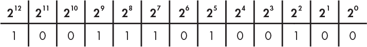
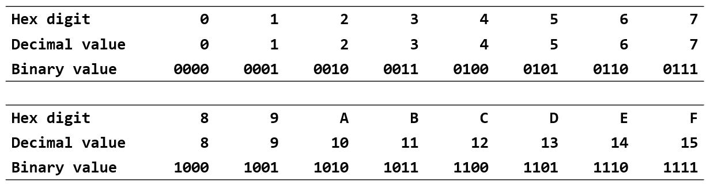
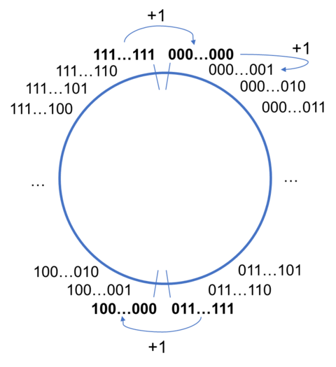
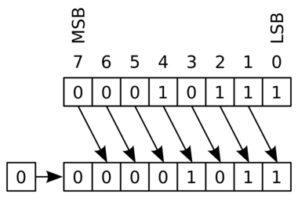
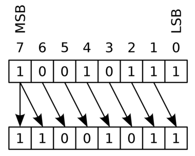

前言
计算机科学教学的前两年，重点是训练你的编程方法和抽象思维能力。在斯坦福大学成功的教学经验中，这两个任务分别由 CS106A 和 CS106B 两门课完成。在 StickMind 课程规划中，这两个任务由 CS101 课程完成，选用 C++ 编程语言。未来也可能会推出现代 C 语言版本的 CS101，敬请期待。
编程方法学的重点是将程序写对，能够利用逐步求精等基本策略，将稍大一些的程序进行分解。这类课程一般会设置一些小游戏或者文本处理，只要求程序能够正确运行即可。抽象思维的重点则是将程序写好，利用一些经典的数据结构和算法，你可以解决一些更为复杂的问题。这类课程不仅要求你把程序写对，更要求你能够高效地解决问题。
经过这些前置课程的训练，你基本能够掌握以下一些能力：
- 了解 Python/C++/Java 基本语法
- 会用递归思维解决问题
- 理解数据抽象并能够实现经典的抽象数据类型（链表、栈、堆、集合、映射）
- 理解并能够实现经典算法（搜索、排序、回溯、哈希）
作为一名程序员，你也应该具备良好的软件工程能力，能够编写组织良好、可读性强的代码。
本课程在计算机科学教学中充当了承上启下的作用。这类课程一般以“计算机组成原理”或“计算机系统基础”冠名。前者偏重硬件，会涉及到 CPU 的内部细节，甚至会要求你设计一个 CPU 模拟器；而后者则偏重软件，以软件开发者的视角抽象看待硬件，不会在硬件层面花费太多精力。本课程倾向于后者，继续提升你的编程技术，在广度和深度上拓展你的编程经验。
本课程将从 C 语言开始，逐步深入到底层汇编语言，一步步带你梳理计算机的运行机制。当完全理解计算机如何执行程序并操作数据时，你将会成为一名更高效的程序员，特别是在处理调试问题、性能优化、内存管理以及程序健壮性方面。只有理解程序是如何运行的，你才能更好地理解 Python/C++/Java 这些高级语言的底层执行逻辑，才能更快地学习其他编程语言进行开发。
本文档是《CS102：计算机组成与系统》课程伴侣，章节规划大致和课程计划同步。大部分内容取材自《深入理解计算机系统》和《C 程序设计语言》两本教材，如有雷同，纯属故意。技术类书籍在没有掌握的情况下阅读，往往效率低下。通过课程、讲义或手册的形式，将一些核心的概念打磨清楚后再去看书，不仅可以节省大量宝贵的时间，还能真正领会字里行间的深意。所以，本书也可以作为上述两本教材的上手指南。
目标
本课程的目标是让学生掌握
- 以复杂的内存和指针方式编写 C 程序
- 对地址空间以及 C 程序的编译/运行时行为，能够建立一个准确的模型
获得以下能力
- 把 C 语言转换到 x86-64 汇编语言
- 编写适配硬件算术局限性的程序
- 识别程序瓶颈并提高运行时性能
- 在 Linux 环境中开发程序
贯穿整个课程，最终会带你揭开计算机基础架构的奥秘。
Linux 介绍
本章通过一些基本概念介绍 Linux 的开发环境。首先，我们会讨论 Linux 基金会；然后，介绍一些流行的 Linux 发行版。最终目的是希望大家能够选择一款合适的发行版，作为日常开发的必备工具。
Linux 历史
Linux 是一种开源计算机操作系统，最初是在基于英特尔 x86 的个人计算机上开发的。随后，它被移植到了一系列其他硬件平台上，从小型嵌入式设备到世界上最大的超级计算机。
1991 年，Linus Torvalds 还是芬兰赫尔辛基的一名学生。当时他开始了一个项目：编写自己的操作系统内核。他还收集并开发了以内核为中心的整个操作系统所需的其他基本组件。没过多久，该项目就被命名为 Linux 内核，并最终发展成为对当今世界产生巨大影响的项目。
1992 年，Linux 通过 GNU（自由软件基金会 FSF 的一个项目，推广免费软件）使用 GPL 许可，这使它能够建立一个全球开发者社区。通过将内核与 GNU 项目中的其他系统组件相结合，许多其他开发人员创建了名为 Linux 分发版的完整系统，该系统首次出现在 90 年代中期。
90 年代中期创建的 Linux 发行版完全免费，为计算提供了基础，并成为开源软件运动的推动力。1998 年，IBM 和 Oracle 等大公司宣布支持 Linux 平台，并开始了一系列重大的开发工作。
Linux 基金会
Linux 基金会（LF）是一个非营利性技术联盟，负责托管和促进开源软件项目的协作开发。除了提供一个可以保护和加速 Linux 内核开发的中立组织之外，LF 还致力于围绕开源项目构建一个可持续的生态系统，以加速技术开发和商业应用。
Linux 基金会项目对世界基础设施至关重要，包括 Linux、Kubernetes、Node.js、ONAP、PyTorch、RISC-V、SPDX、OpenChain 等。Linux 基金会专注于利用最佳实践，满足贡献者、用户和解决方案提供商的需求，为开放协作创建可持续的模型。
三大主流 Linux 发行版家族
最具代表性的几个发行版家族有：
- Red Hat 系统家族（包含 CentOS 和 Fedora）
- SUSE 系统家族（包含 openSUSE）
- Debian 系统家族（包含 Ubuntu 和 Linux Mint）

参见：The LWN.net Linux Distribution List
Linux 基金会发布的软件都会保持发行版兼容性，这意味着这些软件几乎可以在所有的现代发行版中无差别运行。不同发行版之间可能仅仅是包管理器、软件版本、文件位置之间有些许差异。掌握任何一个发行版的使用后，都可以很快地迁移到另一个。
Red Hat 系统家族
Red Hat Enterprise Linux（RHEL）家族包括 Fedora，Rocky Linux 和 Oracle Linux 在内的系列产品。
Fedora 与 RHEL 有着密切的关系，并且包含的软件比 Red Hat 的企业版多得多。其中一个原因是，一个多元化的社区参与了 Fedora 的构建，其中许多贡献者并不为 Red Hat 工作。此外，它还被用作未来 RHEL 版本的测试平台。
由于 CentOS 8 在 2021 年之后不再更新，Rocky Linux 挑起了大梁，目的是提供一个由社区驱动的企业版 RHEL。
关于 Red Hat 家族的一些信息：
- Fedora 是 RHEL 的上游测试平台
- Rocky Linux 是 RHEL 的克隆
- 支持多个硬件平台
- 使用基于 RPM 的 dnf 包管理器来安装、更新和删除系统中的包
- RHEL 在企业中有着广泛的使用。
SUSE 系统家族
SUSE Linux Enterprise Server (SLES)/openSUSE 的关系和 RHTL/Fedora 很相似。
关于 SUSE 家族的一些信息：
- SLES 是 openSUSE 的上游
- 使用基于 RPM 的 zypper 包管理器来安装、更新和删除包
- 包括用于系统管理目的的 YaST 应用程序。
- SLES 广泛应用于零售业等其他行业
Debian 系统家族
Debian 发行版是 Ubuntu 和 Linux Mint 等其他几个发行版的上游，通常用于服务器和台式计算机。Debian 是一个纯粹的开源社区项目（不属于任何公司），并且非常注重稳定性。
Debian 为所有 Linux 发行版的用户提供了迄今为止最大、最完整的软件仓库。Ubuntu 旨在提供长期稳定性和易用性之间的良好折衷。由于 Ubuntu 的大部分软件包都来自 Debian 的稳定分支，继承了 Debian 的超大软件仓库。本课程将基于 Ubuntu 22.04 LTS 发行版进行学习。
关于 Debian 家族的一些信息：
- Debian 家族是 Ubuntu 的上游，Ubuntu 是 Linux Mint 和其他版本的上游
- 使用基于 DPKG 的 APT 包管理器来安装、更新和删除包
- Ubuntu 已被广泛用于云部署
- 虽然 Ubuntu 是在 Debian 之上构建的，并且是基于 GNOME 的，但它在视觉上与标准 Debian 以及其他发行版上的界面不同
Windows 模拟 Linux 环境
本节目标
由于大部分同学使用 Windows 系统，在 Windows 平台体验 Linux 开发工具也是可以的。完成本节内容的学习，你应该能够尝试解决以下问题：
- 什么是 MSYS2？如何安装 MSYS2？
- 如何使用
pacman包管理工具更新、安装、删除软件包？ - 如何修改 MSYS2 国内源？
- 如何使用 MSYS2 编译/运行 C 程序？
安装 MSYS2 开发工具
MSYS2 提供了一个易于使用的类 Linux 环境来构建、安装和运行本机 Windows 软件。配合 VS Code 等开发工具，可以搭建一个较为轻量的开发环境。对于一些 POSIX 依赖不太严格的测试，比起使用 Linux 虚拟机更为直接、方便。
安装过程，有以下几点需要注意：
- 国内用户建议断网安装，避免中途出现更新密钥卡死的问题
- 安装完后，国内用户建议修改国内软件源，提高下载速度
- 后续软件体积较大，建议安装在非 C 盘根目录
- 建议使用 MSYS2 UCRT 子系统，和课程保持一致
- 优先安装
mingw-w64-ucrt-x86_64-前缀的软件包
常用命令总结如下，方便后续使用查询，参考连接：Package Management
-
更新 MSYS2 组件，修改源后建议更新两次
pacman -Suy -
安装
openssh可用于后续连接远程服务器pacman -S openssh -
安装
gcc、gdb、pkg-config等常用开发工具pacman -S mingw-w64-ucrt-x86_64-toolchain -
安装
make，cmake，ninja等构建工具pacman -S make mingw-w64-ucrt-x86_64-cmake mingw-w64-ucrt-x86_64-ninja
编译运行 C 程序
在 MSYS2 当前目录创建一个 hello.c 文件，输入以下代码：
#include <stdio.h>
int main(void) {
printf("Hello World.\n");
return 0;
}
使用以下命令编译你的第一个 C 程序：
gcc hello.c -o hello
运行该程序，需要以 ./ 开头执行以下命令：
./hello
前缀 ./ 表示在当前目录下寻找 hello 程序。
Ubuntu 虚拟机安装及配置
本节目标
本节带大家使用 VirtualBox 安装一个 Ubuntu 22.04 LTS 桌面系统，并尝试使用 OpenSSH 模拟远程登陆。完成本节内容的学习，你应该能够尝试解决以下问题：
- 如何通过 VirtualBox 安装 Ubuntu 虚拟机？
- 如何使用
apt包管理器安装、更新、删除软件包？ - 如何修改 Ubuntu 软件源提高下载速度？
- 如何使用 MSYS2 的
ssh工具访问 Ubuntu 虚拟机？
安装 Ubuntu 虚拟机
VirtualBox 是 Oracle 提供的一款流行的虚拟化软件，可用于 Linux、mac 和 Windows 系统。由于 Linux 系统相对灵活，软件包依赖维护较差，在不熟悉的情况下，很容易造成系统破坏，无法开机等问题。所以，初学阶段没必要在物理机上安装真实的 Linux 系统，就目前的学习而言，虚拟机提供的功能完全够用。一旦虚拟机出现问题，可以直接删除，重新安装。
提前下载 VirtualBox 和 Ubuntu 22.04 LTS 镜像：
详细的安装过程，请跟随课堂视频一步步完成安装。
安装开发工具
apt 命令是一个功能强大的命令行工具，它与 Ubuntu 的高级打包工具（APT）配合使用。 apt 中包含的命令提供了安装新软件包、升级现有软件包、更新软件包列表索引、甚至升级整个 Ubuntu 系统的方法。
尝试安装以下软件：
-
build-essential包含了常用的gcc开发工具sudo apt install build-essential -
安装
gdb、valgrind调试器和内存检测工具sudo apt install gdb valgrind -
安装
git，cmake等常用工具sudo apt install git cmake ninja-build
参考文献：
安装 SSH 工具
OpenSSH 是一个功能强大的工具集，用于远程控制联网计算机以及在联网计算机之间传输数据。OpenSSH 客户端和服务器应用程序的安装非常简单。
使用以下命令在 Ubuntu 系统上安装 OpenSSH 客户端应用程序：
sudo apt install openssh-client
使用以下命令在 Ubuntu 系统上安装 OpenSSH 服务器应用程序：
sudo apt install openssh-server
默认情况下，OpenSSH 服务将会自动启动，也可以使用下述命令手动开启服务：
sudo systemctl start sshd.service
参考文献：
模拟远程登陆
这里需要先配置端口转发，详细的配置过程，请跟随课堂视频一步步完成。

完成端口转发配置后，我们可以使用终端模拟远程登陆：
$ ssh cs@localhost -p 2222
The authenticity of host '[localhost]:2222 ([127.0.0.1]:2222)' can't be established.
ED25519 key fingerprint is SHA256:gfHLfANKNM4cCAoDEZ/CiZ97ql3lfUA2CVM28H6JssM.
This key is not known by any other names.
Are you sure you want to continue connecting (yes/no/[fingerprint])? yes
Warning: Permanently added '[localhost]:2222' (ED25519) to the list of known hosts.
cs@localhost's password:
Welcome to Ubuntu 22.04.3 LTS (GNU/Linux 6.2.0-26-generic x86_64)
* Documentation: https://help.ubuntu.com
* Management: https://landscape.canonical.com
* Support: https://ubuntu.com/advantage
Last login: Tue Aug 15 13:56:00 2023 from 10.0.2.2
VS Code 官方远程插件工作流
前往官网下载安装 VS Code，在插件市场搜索并安装 Remote - SSH 插件。

插件安装完成后，在工具栏选择 Remote Explorer 模块，点击 SSH 后面的 + 号。在弹出的输入窗口中，输入 SSH 登陆地址。
ssh cs@localhost -p 2222
随后会提示选择配置文件保存位置，此处直接“回车”选择默认位置即可。

此时点击 Remote 右侧的刷新按钮，就可以看到服务器 IP。连接该服务器，只需要点击 IP 右侧的箭头，随后输入你的账户密码就可以登录。登录成功后，可以在 VS Code 右下角看到连接状态。

服务器连接成功后，通过 VS Code 菜单栏 File 可以选择 “Open File/Open Folder” 编辑你的文件或项目。
Linux 命令行
Linux 发行版通常提供多种不同的图形桌面环境，极大地方便了不同用户的使用习惯，但是 Linux 系统真正强大的却是命令行。本课程建议大家选择一款流行的桌面环境，将更多的精力放在命令行的学习上，而不是放在五花八门的桌面环境定制上。
从今天开始，通过命令行工具和你的 Linux 系统进行交互，并一直走下去。真正的 Linux 系统管理员也是花费了大量的时间在命令行的工具上，通过文本界面自动化一些任务，解决一些问题。有句话是这么说的，“图形用户界面让简单的事情变得更简单，而命令行界面让困难的任务变得可能”。Linux 系统严重依赖大量的命令行工具，这些工具有以下一些优点：
- 没有 GUI 开销，对硬件要求更友好
- 几乎所有的任务都能够通过命令行完成
- 可以为一些常见的任务定制命令脚本自动完成
- 可以在任何地方通过网络连接远程 Linux 服务器
- 图形界面在不同的发行版中会有差异，但命令行的使用却是通用的
使用文本终端
终端模拟器程序在桌面窗口中模拟独立终端，本质上就像你在没有运行图形界面的纯文本终端上登录机器一样。大多数终端模拟器程序支持打开多个终端会话。Ubuntu 默认使用 gnome-terminal 终端应用程序。

sudo
sudo 为用户提供管理（admin）权限，允许用户使用 root 用户的安全权限来运行程序。全新安装的 Ubuntu 系统默认 root 密码是随机的，每次开机都会有一个新的密码。
如果想把该密码固定，可以打开终端，输入以下命令。重复输入两次密码进行设置（输入过程中，字符不会显示）。
sudo passwd
此时我们可以通过以下命令切换到 root 用户。注意，在 root 用户下所有操作都是允许的，切记不要误改文件，否则无法恢复。
su root
cs@stickmind:~$ su root
Password:
root@stickmind:/home/cs#
基本命令
本节讨论如何通过命令行完成一些基本操作。
登陆/退出系统
回顾虚拟机的使用教程，通过命令行，可以使用以下命令登陆系统。SSH 通过服务器地址 172.0.0.1 和端口 2222 访问系统中的 cs 账户：
ssh cs@172.0.0.1 -p 2222
退出系统可以使用：
exit
重启/关机
使用 shutdown 命令可以关闭 Linux 系统。以下命令表示立刻关闭计算机（不加参数 now，则系统将会在 1 分钟后关机）：
sudo shutdown now
重启计算机可以使用 reboot 命令。以下命令表示立刻重启计算机：
sudo reboot
reboot 命令等价于 sudo shutdown -r now。其中，参数 now 可以替换成具体时间，比如 sudo shutdown -r +30 表示 30 分钟后重启。
访问路径
登陆系统后，默认的位置是个人账户目录，也可以通过系统变量 $HOME 查看：
echo $HOME
在 Linux 系统中，该路径也可以使用 ~ 表示，例如 ~/Desktop 表示 /home/cs/Desktop。
| 命令 | 用途 |
|---|---|
pwd | 显示当前路径 |
cd ~ 或 cd | 切换到个人账户目录 |
cd .. | 切换到上级目录 (..) |
cd - | 切换到前一步目录 - (减号) |
定位程序位置
当我们执行命令时，系统会根据配置好的路径依次在目录中寻找该命令；如果找不到，则会提示 “not found”。可以通过系统变量 PATH 查看修改查找的路径和顺序。
echo $PATH
根据输出可以看出，路径之间用冒号分隔，查询顺序从左到右依次进行。
$ echo $PATH
/usr/local/sbin:/usr/local/bin:/usr/sbin:/usr/bin:/sbin:/bin:/usr/games:/usr/local/games:/snap/bin
在执行 hello 程序时，如果不添加 ./ 前缀，则系统会提示找不到 hello 命令，其原因就是 PATH 并不包含当前目录。如果我们将 hello 程序放到 ~/.local/bin 目录下，则可以通过以下命令，将该路径添加到 PATH 变量中。
export PATH=$HOME/.local/bin:$PATH
使用 which 命令可以定位程序的位置，该命令会在系统路径中查找程序的位置并输出，例如
$ which make
/usr/bin/make
如果不局限系统路径，可以使用 whereis 命令扩大搜索范围。
$ whereis diff
diff: /usr/bin/diff /usr/share/man/man1/diff.1.gz
绝对路径 vs 相对路径
在 Linux 中定义路径的两种方式：
-
绝对路径
绝对路径以根路径
/开头，依次跟随目录树分支，定位到需要的位置，例如，/usr/bin。 -
相对路径
相对路径以当前路径开头，
.表示当前目录，..表示上一级目录，~表示个人账户目录。
在个人账户目录中，执行以下命令都会切换到 /usr/bin 目录，
$ pwd
/home/cs
$ cd /usr/bin
$ pwd
/home/cs
$ cd ../../usr/bin
查看文件系统
使用第三方工具 tree 可以很方便地浏览文件系统内容，通过以下命令进行安装：
sudo apt install tree
直接使用 tree 命令会递归列出当前路径下所有文件树，通过 -L 指定层级可以指定显示的文件深度：
$ tree -L 1
.
├── Desktop
├── Documents
├── Downloads
├── Music
├── Pictures
├── Public
├── snap
├── Templates
└── Videos
其他一些常用命令也可以实现类似目的：
| 命令 | 用途 |
|---|---|
ls | 列出当前目录内容 |
ls –a | 列出当前目录内容，包含 . 开头的隐藏文件 |
ls -l | 以列表形式列出当前目录内容 |
练习
- 使用
whereis命令定位gcc程序的位置 - 显示当前路径
- 切换到
/usr/bin目录 - 切换到个人账户目录
- 切换到上一级目录
- 使用
-参数切换到前一步目录 - 显示当前路径
文件操作
Linux 提供了许多命令用于查看文件的内容、创建新文件或空文件、更改文件的时间戳以及移动、删除和重命名文件或目录。这些命令可以用于管理数据和文件，并确保在正确的位置提供正确的数据。在本节中，我们将学习如何管理文件。
查看文件
| 命令 | 用途 |
|---|---|
cat | 用于查看不太长的文件，不提供页面操作 |
tac | 逆序打印文件内容 |
less | 用于查看较大的文件，提供页面操作，操作逻辑类似 vi 编辑器 |
tail | 默认打印文件后 10 行内容，通过参数 -n 15 或 -15 可以改变显示的行数 |
head | 和 tail 命令相反，默认打印文件前 10 行内容 |
补充：vi 编辑器使用 j 向下滚动，k 向上滚动，使用 / 向后查找，使用 ? 向前查找。
文件的创建
touch 命令常用于更新文件的状态，默认修改文件时间戳为当前时间。不过，我们也可以使用该命令创建一个空白文件：
touch myfile
更多功能可以查询帮助，比如使用 -t 可以设定具体的时间戳。以下命令将文件时间设置为 8 月 12 日 14 点整：
touch -t 08121400 myfile

文件移动、重命名等
mv 命令可以实现两个功能：
- 重命名文件或文件夹
- 移动文件到另一个目录
如果不确定删除哪些文件，可以是用 -i 交互操作。
| 命令 | 用途 |
|---|---|
mv | 重命名文件 |
rm | 删除文件 |
rm –f | 强制删除文件 |
rm –i | 交互删除文件 |
文件夹创建和删除
mkdir 命令用于创建目录文件夹，例如，在当前目录创建文件夹可以使用
mkdir myfolder
在指定目录创建文件夹可以使用
mkdir ~/Desktop/myfolder
删除文件夹可以使用 rmdir 命令，默认只能删除空文件夹。使用命令 rm -rf 可以快速简单地递归删除整个文件夹。
| 命令 | 用途 |
|---|---|
mv | 重命名文件夹 |
rmdir | 删除空白文件夹 |
rm -rf | 强制删除文件夹 |
修改命令行提示符
命令行工具通过变量 PS1 存储命令行的文本字符串，一般 Linux 发行版会默认设置一个值，例如：
cs@stickmind:~$
通过修改该变量，可以定制显示的内容：
PS1="cs102@virtualbox: "
命令提示符将修改为：
cs102@virtualbox:
注意，在终端直接赋值变量名，仅在当前激活的终端有效。重新打开终端，变量内容仍然是默认值。如果我们想永久修改该变量，可以尝试在 .bashrc 中进行设置。
练习
- 使用
touch创建两个文件file1和file2 - 使用
ls -l检查文件状态 - 将
file1重命名为new_file1 - 将
file2移动到上级目录 - 删除
file2和new_file1 - 创建文件夹
dir1 - 删除
dir1
文件搜索
熟练使用查找命令可以节省很多时间并提高工作效率，涉及搜索的主要工具是 find 等实用程序。
标准文件流
在执行命令时，默认情况下有三个标准文件流始终打开以供使用：标准输入 stdin、标准输出 stdout 和标准错误 stderr。
| 名称 | 符号名 | 值 | 示例 |
|---|---|---|---|
| 标准输入 | stdin | 0 | 键盘 |
| 标准输出 | stdout | 1 | 终端 |
| 标准错误 | stderr | 2 | 日志 |
stdin 通常是键盘，stdout 和 stderr 通常打印在终端上。利用重定向，也可以将某个文件作为输入 stdin，并将输出 stdout 定向到另一个文件，stderr 通常定向到错误日志文件。
在 Linux 中，所有打开的文件都由所谓的文件描述符（file descriptor）在内部表示的并从零开始，stdin 是 0，stdout 是 1，stderr 是 2。如果还打开了其他文件，则文件描述符继续从 3 开始，并依次增加。
重定向
通过 Shell，我们可以重定向三个标准文件流，这样我们就可以从一个文件或另一个命令中获得输入，而不是从键盘获得输入。我们可以将输出和错误写入文件，或者用于为后续命令提供输入。
例如，可以使用 > 符号将 hello 输出定向到某个文件：
./hello > anyfile
使用 < 符号将某个文件作为输入：
cat < hello.c
输入输出还可以组合使用：
./add < infile > outfile
对于 stderr 需要明确指定文件描述符的值：
./add 2> errfile
如果打算将 stderr 输出到 stdout，则可以使用：
./add > outfile 2>&1
管道
UNIX/Linux 的理念是设计许多简单而简短的程序或命令，协同工作来解决复杂的任务，而不是设计一个复杂的程序，通过不同的选项和模式来完成。为了实现这一点，UNIX/Linux 大量使用管道来实现这一目的，通过管道可以将一个命令或程序的输出作为另一个命令或程序的输入。
可以通过管道符号 | 来实现管道操作：
$ cmd1 | cmd2 | cmd3
以上命令非常有效，因为 cmd2 和 cmd3 不必等待先前的管道命令完成，就可以开始处理其输入流中的数据；特别是在多核心系统上，可用的计算能力得到了更好的利用。
另一点是，管道之间的输入输出无需存储到硬盘上，硬盘的读写同样效率低下。
文本搜索
使用 grep 命令可以打印与模式匹配的行，常用于查找字符串。例如，在文件 hello.c 中查找 main 函数，可以使用如下的命令：
grep main hello.c
利用管道，也可以在标准输出中查找字符串，例如：
cat hello.c | grep main
文件查找
find 是 Linux 系统管理员日常生活中非常有用且经常使用的实用程序。它可以从任意特定目录（或目录集）向下递归文件系统，并定位符合指定条件的文件，默认路径名始终为当前工作目录。
例如，管理员有时会花几周的时间扫描的一个潜在的核心文件，以便将其删除。有时候也用于清理临时目录 /tmp 或缓存目录 /var/cache/ 中的非必要文件。许多发行版也内置一些脚本程序，定期清理这些目录。

不指定参数的情况下，find 会递归列出当前目录下所有的文件。常用的选项有：
-
-name列出包含某个字符串的文件find /usr -name gcc -
-iname列出不包含某个字符串的文件find /usr -iname gcc -
-type限定文件的类型，例如d表示目录，l表示符号链接，f表示普通文件find /usr -type d -name gccfind /usr -type f -name gcc
find 的另一个用途是能够在符合搜索条件的文件上运行命令，需要使用选型 -exec。例如，查找并删除 .swp 后缀的文件：
find -name "*.swp" -exec rm {} ';'
其中 {} 充当占位符，用于替换搜索到的文件名。需要注意的是，命令必须以 ';' 或 \; 结尾。
练习
以 / 开头，搜索包含 init.d 的文件。
从 C++ 到 C
本节我们会使用 C 语言复习 CS101 中的一些概念，并改写一些 C++ 程序，逐步上手 C 语言的开发。
相信大家还记得 CS101 库中的两个重要的接口工具 strlib.h 和 filelib.h。这些抽象接口极大地方便了我们编写字符串处理和文件 I/O 相关的程序。所以在本课程的教学方式上，我们依然遵循抽象思维的观念，避免较早地涉及底层的细节。在入门示例中，重点抽象了以下两个类型 string 和 stream，以便在不涉及指针的情况下，就能完成字符串和文件的处理工作。
希望通过这样的方式，方便大家对比学习，能够将现有的知识迁移到新的语境中。
/*
* Type: string
* ------------
* The type string is identical to the type char *, which is
* traditionally used in C programs. The main point of defining a
* new type is to improve program readability. At the abstraction
* levels at which the type string is used, it is usually not
* important to take the string apart into its component characters.
* Declaring it as a string emphasizes this atomicity.
*/
typedef char* string;
/*
* Type: stream
* ------------
* Like string, the stream type is used to provide additional
* readability and is defined to be equivalent to FILE *
* (which is particularly confusing because it violates
* standard case conventions).
*/
typedef FILE* stream;
为了照顾部分编程基础较为薄弱的同学，本次课程也会引入 CMake 并介绍一种较为方便的 VS Code 开发工作流，方便大家课后自行练习、巩固。
练习
下载群文件中的 230918-cslib/cslib.zip 文件，尝试使用 CMake 工具，将 .h 和 .c 组成的文件集合打包成静态库。
simpio.h
该接口导出几个函数来简化输入数据的读取。
接口
| 函数 | 功能 |
|---|---|
GetInteger() | 从标准输入读取一行文本并将其作为 int 整数返回 |
GetLong() | 从标准输入读取一行文本并将其作为 long 整数返回 |
GetReal() | 从标准输入读取一行文本并将其作为 double 浮点数返回 |
GetLine() | 从标准输入读取一行文本并将其作为字符串返回 |
ReadLine(infile) | 从输入文件中读取一行文本并将该行作为字符串返回 |
接口详情
/*
* Function: GetInteger
* Usage: i = GetInteger();
* ------------------------
* GetInteger reads a line of text from standard input and scans
* it as an integer. The integer value is returned. If an
* integer cannot be scanned or if more characters follow the
* number, the user is given a chance to retry.
*/
int GetInteger(void);
/*
* Function: GetLong
* Usage: l = GetLong();
* ---------------------
* GetLong reads a line of text from standard input and scans
* it as a long integer. The value is returned as a long.
* If an integer cannot be scanned or if more characters follow
* the number, the user is given a chance to retry.
*/
long GetLong(void);
/*
* Function: GetReal
* Usage: x = GetReal();
* ---------------------
* GetReal reads a line of text from standard input and scans
* it as a double. If the number cannot be scanned or if extra
* characters follow after the number ends, the user is given
* a chance to reenter the value.
*/
double GetReal(void);
/*
* Function: GetLine
* Usage: s = GetLine();
* ---------------------
* GetLine reads a line of text from standard input and returns
* the line as a string. The newline character that terminates
* the input is not stored as part of the string.
*/
string GetLine(void);
/*
* Function: ReadLine
* Usage: s = ReadLine(infile);
* ----------------------------
* ReadLine reads a line of text from the input file and
* returns the line as a string. The newline character
* that terminates the input is not stored as part of the
* string. The ReadLine function returns NULL if infile
* is at the end-of-file position.
*/
string ReadLine(stream infile);
strlib.h
该接口定义了动态分配字符串的通用库。传统 C 字符串与使用此接口定义的字符串之间的主要区别是：
strlib.h接口负责内存分配，确保有足够的空间来保存每个字符串操作的结果。strlib.h接口的客户端应将所有字符串视为不可变，并避免写入字符数组。
字符串抽象数据类型
字符串在 C 中就是一个字符序列（数组）。如果想要完整地掌握 C 字符串，我们需要从多个层面、不同角度来仔细研究。涉及到的知识点，保守估计也要四五节课的时间来讨论。
以抽象数据类型来看待字符串，可以将其当作一个逻辑单元来处理，无需过早地关注数据表示的内部细节。这也是我们一直推崇的抽象思维方法，即关注抽象层的行为，在学会如何有效使用之前，不必沉溺于细节问题。
以抽象观点处理字符串，我们可以利用 strlib.h 迁移很多 CS101 中的字符串处理案例。遗憾的是，C 标准库并没有提供现成的容器，在涉及中间数据存储时，暂时不太方便处理。后续学习完数组后，我们可以使用动态数组来实现这一目的。随着课程的深入，最终我们应该有能力实现一个泛型的 C 版本的容器，例如 vector、stack 等。
关于字符串的分层抽象如下所示：
| 分层抽象 |
|---|
strlib.h 接口 |
string.h 接口 |
| 语言级操作 |
| 机器级操作 |
其中，string.h 是 C 标准接口，后续课程会重点介绍。这也是你必须掌握的接口，但是用好该接口需要掌握很多底层的细节。常规的字符串处理，并不需要关注太多底层的细节，所以这里引入了 string 类型，并在标准库基础上封装了更好用的 strlib.h 接口，使得字符串操作相对容易些。
strlib.h 接口
提起抽象类型，我们就要确定可以在该类型上实施的操作，这些被称为基本操作。
一些常见的操作比如：
- 如何定义一个字符串变量/常量？
- 如何从用户那里读入一个字符串？
- 如何在屏幕上输出一个字符串？
除此之外，我们还需要：
- 如何确定一个字符串的长度？
- 如何比较两个字符串？是否相等？是否靠前？
- 如何选择字符串中某个位置的字符？
- 如何连接两个字符串？
- 如何将单个字符转换为字符串？
- 如何对字符串进行切分？
- 如何判断一个字符串是否包含另一个字符串？
以上所有的操作，在 C++ 中都可以方便地通过类和成员方法来定义。虽然 C 没有 C++ 对象和方法的概念，但是我们可以使用自由函数来替代。
| 函数 | 功能 |
|---|---|
ConcatString(s1, s2) | 通过将两个字符串首尾相连进行连接 |
IthChar(s, i) | 返回字符串 s 中位置 i 的字符 |
SubString(s, p1, p2) | 返回 s 索引区间为 [p1, p2] 的子字符串 |
CharToString(ch) | 接受单个字符并返回由该字符组成的单字符字符串 |
StringLength(s) | 返回字符串 s 的长度 |
CopyString(s) | 将字符串 s 复制到动态内存中并返回新字符串 |
StringEqual(s1, s2) | 如果字符串 s1 和 s2 相等，则返回 true |
StringCompare(s1, s2) | 如果字符串 s1 按字典顺序位于 s2 之前，则返回 -1；如果相等，则返回 0；如果 s1 位于 s2 之后，则返回 +1 |
FindChar(ch, text, start) | 从位置 start 开始，在字符串 text 中搜索的字符 ch，并返回该字符出现的第一个索引；如果未找到匹配项，则返回 -1 |
FindString(str, text, start) | 从位置 start 开始，在字符串 text 中搜索字符串 str，并返回该字符串出现的第一个索引；如果未找到匹配项，则返回 -1 |
ConvertToLowerCase(s) | 返回一个新字符串，其中所有字母字符都转换为小写 |
ConvertToUpperCase(s) | 返回一个新字符串，其中所有字母字符都转换为大写 |
IntegerToString(n) | 将整数转换为相应的数字字符串 |
StringToInteger(s) | 将数字字符串转换为整数 |
RealToString(d) | 将浮点数转换为相应的数字字符串 |
StringToReal(s) | 将数字字符串转换为浮点数 |
Pig Latin
本节通过一个简化的 C 程序复习模块化开发和逐步求精的过程。模块化开发就是把一个程序分成多个模块的技术，回忆下 CS101 作业 1 中 soundex 的处理过程，模块通过一系列函数实现功能拆分。
通过该案例，我们也可以了解从 C++ 转到 C 的一些变化，例如，如何维护状态信息？如何保持状态的私有性？
任务说明
Pig Latin 按照如下规则转换每个英文单词，从而创造一门新的语言：
- 如果单词以辅音开头，则将第一个元音字母前的所有辅音字符串移到末尾，并加上
ay - 如果单词以元音开头，则加上
way
例如，单词 scram 符合第一条规则，所以将 scr 移动到尾部并加上 ay，结果就是 amscray。单词 apple 符合第二条规则，所以直接加上 way，结果就是 appleway。
任务 1：实现交互程序
程序执行时会提示用户输入一段文字，然后输出如下结果：
Enter a line: this is pig latin.
isthay isway igpay atinlay.
我们采用自顶向下实现，可以不用一开始就决定如何将程序分割成多个模块。在实现交互程序时，可以先假设有一个接口，能够将一行字符串转换成 Pig Latin：
/*
* Function: TranslateLine
* Usage: TranslateLine(line);
* ---------------------------
* This function takes a line of text and translates
* the words in the line to Pig Latin, displaying the
* translation as it goes.
*/
void TranslateLine(string line);
以抽象思维开发程序，我们已经能够实现程序的交互部分了。
💡Hint
int main(int argc, string args[]) {
printf("Enter a line: ");
string line = GetLine();
TranslateLine(line);
}
任务 2：实现 TranslateLine
实现 TranslateLine 将转变抽象层级，此时我们作为开发者将提供上述接口。在这个层级上，问题依然复杂，需要进一步将问题拆解。
TranslateLine 需要做的工作大致可以分为 3 步：
- 如何将一个字符串拆分成独立的单词
- 按规则将每个单词转换成 Pig Latin
- 显示转换后的单词，并以换行符结尾
💡Hint
如果以容器的思想，如何拆分上述步骤？
C 虽然没有提供直接使用的容器，但使用动态数组，我们也能够完成同样的任务。这里为了简便起见，我们不需要存储每个单词，一旦翻译完成就立刻显示结果，并处理下一个单词。
回顾 CS101 中作业 2 的 search 程序，对单词的处理一般是通过 token 来完成的。比如，这样的输入行：
this is pig latin.
可以看作是以下 8 个 token 组成：

可以看出，除了单词，token 还包括一些标点组成的字符，在处理 token 时需要进行判断。这里我们假设有一个谓词函数接口 IsLegalWord 可以直接使用。
同样为了简便起见，我们提供了一份 C 版本的 tokenscanner 接口库。
| 函数 | 功能 |
|---|---|
InitScanner(line) | 初始化扫描器，以便从开头读取每个 token |
GetNextToken() | 返回下一个 token |
AtEndOfLine() | 如果扫描器到达末尾，返回 true |
常用的编程习语可以参考如下的循环结构。其中，InitScanner 初始化后，GetNextToken 将能够获取第一个记号。如果还没有 AtEndOfLine，扫描器将会继续获取下一个记号。
InitScanner(line);
while (!AtEndOfLine()) {
token = GetNextToken();
... 处理 token 记号 ...
}
在 tokenscanner 的帮助下，我们进一步拆分了 TranslateLine 处理逻辑，将翻译的工作交给 TranslateWord 处理。
💡Hint
void TranslateLine(string line) {
InitScanner(line);
while (!AtEndOfLine()) {
string token = GetNextToken();
if (IsLegalWord(token))
token = TranslateWord(token);
printf("%s", token);
}
printf("\n");
}
任务 3：实现 IsLegalWord 和 TranslateWord
完成 TranslateLine 的拆解后，我们的工作只剩下 token 处理的几个函数。
IsLegalWord 相对比较容易，我们只需要借助 ctype.h 接口提供的 isalpha 函数就能够判断 token 是否为有效单词。
💡Hint
bool IsLegalWord(string token) {
for (int i = 0; i < StringLength(token); i++) {
if (!isalpha(IthChar(token, i)))
return (false);
}
return (true);
}
TranslateWord 稍微复杂一些，根据规则你需要判断第一个元音字母的位置：如果位置为 0，则按照规则 1 处理；如果不为 0，则按照规则 2 处理。
那么如何判断元音字母呢？检查 strlib.h 接口，我们并没有发现现成的函数可以使用。此时，扩充该接口就很有必要了，因为判断元音的操作相当常见。
剩下的实现相对比较容易，合理使用 strlib.h 接口，我们可以完成这个任务。
💡Hint
string TranslateWord(string word) {
int vp = FindFirstVowel(word);
if (vp == -1) {
return (word);
} else if (vp == 0) {
return (ConcatString(word, "way"));
} else {
string head = SubString(word, 0, vp - 1);
string tail = SubString(word, vp, StringLength(word) - 1);
return (ConcatString(tail, ConcatString(head, "ay")));
}
}
int FindFirstVowel(string word) {
for (int i = 0; i < StringLength(word); i++) {
if (IsVowel(IthChar(word, i)))
return (i);
}
return (-1);
}
思考
- 为什么
GetNextToken不需要提供line参数？ - 循环结构中，
GetNextToken每次调用，都会从line的不同位置开始，这是如何做到的？ - 如何避免外部程序调用我们拆分的这些辅助函数？
推荐阅读
更多 C 和 C++ 的不同之处，可以参考 http://www.cs.ecu.edu/karl/4627/spr18/C.html
实验 0：上手 Linux 开发环境
本课程开发环境选用远程 Linux 云端服务器和命令行工具，搭配本地终端和 VS Code 即可完成所有练习。
本次实验将带大家练习远程开发的流程，实验结束后，你应该能够连接上课程的远程服务器，并能够使用终端命令，搭配 VS Code 进行代码编辑。
❓FAQ 为什么使用远程服务器进行开发？
如果回到上个世纪 80 年代，即使电脑就在你的面前，你也必须使用终端才能对计算机进行操作。现如今，随着个人计算机的发展，虽然图形界面早已成熟，但在真实的开发场景中，使用终端开发仍然占据主导地位。大量的前后端框架、开源项目、开发工具，也严重依赖终端操作。
本课程尽量还原类似的真实开发场景。当你以后有机会去软件公司实习时，你会发现，在这里掌握的技能，将会给你带来极大的回报。
登录课程云服务器
服务器 IP 地址为 106.14.165.94，在任何支持 ssh 命令的计算机终端1上输入如下命令。
- Window 11 已搭载 Windows Terminal
- Linux/macOS 内置 Terminal
ssh YourName@106.14.165.94
第一次使用会弹出确认信息，输入 yes 后紧接着输入服务器用户密码（输入过程中，密码不会显示），成功后的输出信息如下。
The authenticity of host '106.14.165.94 (106.14.165.94)' can't be established.
ED25519 key fingerprint is SHA256:LHvn4qDvTdM1+GcJtG2f+uywxDA2JSys.
This key is not known by any other names
Are you sure you want to continue connecting (yes/no/[fingerprint])? yes
Warning: Permanently added '106.14.165.94' (ED25519) to the list of known hosts.
YourName@106.14.165.94's password:
Welcome to Ubuntu 22.04.1 LTS (GNU/Linux 5.15.0-52-generic x86_64)
查看服务器信息常用命令
- 查看主机名：
hostname - 查看用户名：
whoami - 查看硬盘空间：
df -h（仅root权限） - 查看内存状态：
free -h - 查看当前文件夹空间：
du --max-depth=1 -h - 修改登录密码：
passwd
基于 SFTP 远程开发工作流
使用命令行成功登录服务器后，说明你的计算机已经包含了 SSH 等工具。为了便于开发，可以使用流行的 VS Code 文本编辑器辅助编辑、同步项目代码。
❓FAQ 为什么本课程不推荐使用 VS Code 官方 Remote 插件？
如果使用官方 Remote 插件，一旦连接服务器，VS Code 会在
home目录不断生成.vscode-server垃圾文件，严重的时候甚至达到几个 GB 的空间。除此之外，官方 Remote 插件内存占用也比较高，每个用户都会消耗几百 MB 的内存资源。
如此高的资源消耗，即便国内外各大高校自建的校内服务器，也无法承受。
参考：Copies of vscode-server installed on school servers take up excessive storage and RAM
安装 SFTP 插件
在 VS Code 插件市场搜索 SFTP，选择安装 Natizyskunk 开发的 SFTP 插件，如图所示。

配置
安装完插件之后，可以使用本课程提供的初始项目 starter-proj.zip，该项目已设置好 VS Code 和 SFTP 配置框架。解压后使用 VS Code 打开 starter-proj 文件夹。在 .vscode 文件夹下，编辑 sftp.json 文件修改以下几个信息：
username：服务器用户名password：服务器密码remotePath：服务器上需要编辑的项目路径，例如/home/xuehao/cs102/lab0/

使用
⚠️注意
参照上一步配置的
remotePath，必须先在服务器上提前创建好这些目录，才能进行接下来的操作。
配置好后，点击 VS Code 菜单栏 Help 选择 Show All Commands，或直接按 F1 快捷键，在弹出的命令列表中搜索 SFTP。选择 "SFTP: Download Project"，随后选择默认保存位置，远程服务器中的项目将会自动下载到本地的初始项目文件夹中。

在本地编辑完文件并保存后，SFTP 插件会自动将更新后的文件同步到远程服务器。编译、测试、调试等任务，可以通过终端 Terminal 在远程服务器上进行。
⚠️注意
添加文件：如果之前没有创建任何项目文件，那么当你在本地或服务器中创建文件时，并不会自动同步。此时可以使用 "SFTP: Sync Remote -> Local" 或 "SFTP: Sync Local -> Remote" 手动同步。
删除文件：删除文件比较特殊，以上三条命令，对删除文件不起作用。如果有文件需要删除，必须在本地和服务器中分别手动删除。
⚠️注意
如果不小心使用 VS Code 官方远程插件，可以使用
ls -a命令查看你的服务器目录，此时你会发现一个.vscode-server文件夹。可以使用使用
rm -r .vscode-server命令删除该目录。
⚠️注意
严禁使用 Jetbrains Clion/Fleet 连接服务器！一旦连接，此类开发工具会在服务器上下载超过 2 GB 的 Java 依赖。
终端是一台电子计算机或者计算机系统，用来让用户输入数据，及显示其计算结果的机器。
作业 0：使用 Linux 和 C
Linux 的使用和命令行操作需要不断地练习。熟练使用这些工具，才能更好地完成作业练习。但要注意的是，这些内容不需要刻意去记忆，经过一段时间的重复使用，自然可以掌握。
在开始作业之前，确保你已经能够：
- 登陆课程服务器
- 管理文件，浏览服务器文件系统
- 能够找到实验、作业的初始项目
- 能够合理地管理课程代码，避免杂乱无章
- 通过 VS Code 等编辑器修改服务器上的文件
- 逐步适应 Shell 和命令行的工作流
- 遇到不熟悉的命令，知道去哪里学习
- 会用
tab、上下键等快捷操作避免输入太多命令
本次作业目的是检验大家是否熟练使用 Linux 开发环境，能够适应编辑、构建、运行、测试 C 程序的工作流。
初始项目
建议在个人目录创建一个 cs102 的文件夹，用于管理课程所有的代码。然后可以使用下面的命令，将作业的初始文件复制到该目录。
cp -r /home/cs102-shared/assignments/assign0 ~/cs102
别忘了通过 VS Code 将文件同步到本地查看、编辑。
入侵者检测
在该任务中，你将调查一起模拟的入侵攻击并回答
readme.txt中的几个小问题。每个问题只需要简短的几句话即可，描述你用了什么样的 Linux 命令解决的。
入侵者访问了我们的服务器，并删除了很多文件。幸运的是，这些文件在服务器上都有备份，但在恢复文件之前，你要调查一下入侵者的身份并看看他们做了哪些破坏性操作。
在 assign0/samples/server_files 中包含了一些核心的文件，使用文件操作命令查看有哪些内容。
你需要先调查攻击者的身份。服务器可以供多个用户使用，每个用户的名字都在上述路径的 home 子目录中。例如，用户 bob 的路径是 /home/bob。文件 users.list 包含了认证用户的列表，home 子目录中的用户目录应该和该文件中的用户名一一对应。入侵者是未认证用户，所以他的名字不会出现在users.list 列表中。
你的任务就是找出这个入侵用户名！由于用户列表很多，通过手工比对不太现实，合适的命令行工具可以更快地完成这个任务。Q1：入侵者的名字是什么呢？你是用什么命令发现的？
提示
- 可以考虑创建一个临时文件用于存储中间数据，但更推荐使用管道来优化操作。
- 自学
diff命令的用法，看有没有什么启发。
如果你已经知道入侵者的名字，那么检查一下他的用户目录，看看有什么新的发现。虽然入侵者删除了目录下的文件，但似乎这个目录依然占用了一部分空间。想一想这是为什么？用命令行工具验证一下。
对了，以 . 开头的文件在 Linux 系统中属于隐藏文件，显示这些文件需要一些特殊的参数。Q2：在这些隐藏的文件中，有一个文件记录了入侵者所有的活动记录，这个文件是什么呢？它包含了什么内容？
如果想对系统实施破坏行为，必须使用 sudo 权限执行某些命令。在上述文件中，你会发现整个活动记录非常长，很难发现哪些命令用到了特权权限。Q3：用什么命令可以方便地提取出这些信息？入侵者使用 sudo 执行了哪些命令？
谢尔宾斯基分形
通过该任务，我们可以练习远程开发工作流：编辑、构建、运行、测试。
在 assign0 文件夹中，输入 make 将构建名为 triangle 的程序。运行该程序看看它做了什么：
./triangle
此时应该会输出谢尔宾斯基三角形的 ASCII 表示形式——太酷了！尝试再次运行 make：
$ make
make: Nothing to be done for `all'.
该输出并不是错误提示，只是意味着程序的源代码没有任何变化，因此不需要重新编译任何内容。
在 VS Code 中打开 triangle.c，将 main 中变量 nlevels 的值从 3 更改为 5。保存文件后，修改会自动同步到服务器。源码修改后，必须使用 make 重新构建程序，然后才能运行新构建的程序来显示更大的三角形。如果忘记重新运行 make，将运行修改前的程序！
起始代码使用固定常量来表示要打印的层数。你的任务是扩展程序，提供可选的命令行参数，允许用户指定层数。如果没有参数，./triangle 应默认为 3 层。如果提供参数，例如 ./triangle 4 或 ./triangle 2，则层数由参数指定。
如果给定的层数不合法（大于 8 或负数），程序应该拒绝绘制图形，并打印一条有用的解释性消息，通知用户如何纠正错误，然后以状态 1 提前终止程序（这表明程序执行出现问题）。实现该任务的最佳函数是 error 函数；查看手册（man error），获取有关此函数的更多信息。需要注意的是，你应该指定 errnum 为 0，因为我们不需要打印出与特定错误代码相对应的错误消息。其余参数的值可以通过文档尝试确定。
你的实现必须和 samples 中的示例程序完全匹配。
注意：可以假设用户只输入整数值，不必担心处理非整数的参数。如果用户指定多个命令行参数，则应仅使用第一个参数。
你应该在程序中定义常量，而不是使用“魔法数字”——硬编码到程序中的数字。
为了完成该任务，程序需要将用户的参数（以字符串形式提供）转换为整数。 C 标准库函数 atoi 可以用于执行此操作。查看手册 (man atoi) 或在线文档自行学习该函数。
man 在线手册操作说明
在命令行输入
man error后，终端会进入error函数的在线手册文档。手册会列出函数名称、引入的头文件、函数原型、以及一些说明描述。常用快捷键如下：
j- 向下移动一行k- 向上移动一行ctrl + f- 向下翻一页ctrl + b- 向上翻一页q- 退出参考阅读：
- https://www.howtoforge.com/linux-man-command/
- http://cn.linux.vbird.org/linux_basic/0160startlinux_3.php
测试
课程服务器上提供了一个方便的测试工具 sanitycheck，并提供了一些默认的测试案例供你测试作业代码。该工具会比较你的结果和 samples 中示例程序的结果。你也可以在 custom_tests 文件中添加自己的测试案例。
切换到作业文件夹目录中，执行 sanitycheck 并且不带任何参数，此操作将会执行默认的测试案例：
$ sanitycheck
Will run default sanity check for assign0 in current directory ~/cs102/assign0.
+++ Test A-Make on ~/cs102/assign0
Descr: verify project builds cleanly
Command: make clean && make triangle
OK: Clean build
+++ Test B-Triangle on ~/cs102/assign0
Descr: print a triangle, no command-line argument should default to 3 levels
Command: ./triangle
OK: Submission output matches sample
Matched output:
*
* *
* *
* * * *
* *
...
LOVE IT! This project passes all of the default sanity check cases.
参考 custom_tests 默认的测试格式，添加自己的测试案例，并通过如下命令执行自定义测试：
$ sanitycheck custom_tests
Will run custom sanity check for assign0 in current directory ~/cs102/assign0.
Reading custom test cases from file 'custom_tests'... found 1 test cases.
+++ Test BuildClean on ~/cs102/assign0
Descr: verify project builds cleanly
Command: make
OK: Clean build
Now running custom test cases against your program
+++ Test Custom-1 on ~/cs102/assign0
Command: ./triangle -1
MISMATCH: Submission output does not match sample
Sample output: ./triangle: the number of levels must be between 0 and 8.
Your output:
*
* *
* *
* * * *
* *
* * * *
* * * *
* * * * * * * *
This project passes 0 of the 1 custom test cases read from file 'custom_tests'.
在输出结果中，如果出现 MISMATCH，表明你的程序执行完成，但结果和示例不匹配。如果出现 NOT OK，表明你的程序没有成功地执行，或发生了致命错误，输出结果当然也和示例不匹配。
作业提交
回答 readme.txt 中的问题，正确修改 triangle.c 和 custom_tests 后，可以提交作业。
课程服务器同样提供了 submit 工具，切换到作业文件夹目录，执行如下命令：
$ submit
This tool submits the assignment in the current directory for grading.
Current directory is ~/cs102/assign0
OK to submit project assign0 (y or n)? y
make clean
rm -f triangle *.o
COMPLETED: xuehao submitted assign0 Thu Jan 12 12:07 pm.
需要注意的是，每份作业最多可以提交 5 次。提交之前，记得仔细检查，完善测试案例，避免遗漏。
位和字节
计算机使用位（bit）来表示二值信号，单个位通常不是非常有用。
把多个位组合在一起，对位模式赋予不同的含义，我们就能够表示任何有限集合的元素。例如，计算机使用 8 个位组成的字节（byte）作为最小可寻址的内存单位，而不是单个位。
通过组合位，我们可以表示更多的数值。虽然计算机本质上依然在处理位，但是我们可以创造性地抽象出多种不同的数据表示：
- 文本
- 图片
- 音频
- 视频
- ……
我们需要一些方法来表示基本数据类型，本章将优先介绍计算机的数学进制。
二进制 Binary
日常生活中，我们使用十进制数字系统，可能的原因是我们有十个手指，但是十进制与其他数字系统相比并没有什么不同。
计算机由于硬件的特性，经过历史的选择，最终保留了二进制数字系统。二进制数字系统是我们能够得到的最简单的数字系统——只有两个数字 0 和 1。
位（bit）是由英文 “binary digit” 简写而来，用于表示一个二进制数字位。这是组成信息块的最基本单位。位的概念可以理解为 1 或 0、开或关、是或否、真或假的值。
下图分别展示了十进制和二进制数字系统的计算原理。
$$5028 = 5 * 10^3 + 0 * 10^2 + 2 * 10^1 + 8 * 10^0$$

$$5028 = 1 * 2^{12} + 1 * 2^9 + 1 * 2^8 + 1 * 2^7 + 1 * 2^5 + 1 * 2^2$$
字节（byte）是由 8 个位组成。由于计算机内存是一个由地址编号的大号字节数组，通过地址可以访问每一个字节，所以在计算机编程中，我们无法直接访问某个位。字节是我们能够处理的最小单位。
根据上述计算原理，我们可以得出一个字节可以表示的数字范围是 \([0, 255]\)。
🔔 小技巧 基于基数（Base）的乘法和除法
- 乘法需要向右移动 1 位并补零：1450 * 10 = 14500 对比 1100 * 2 = 11000
- 除法只需要向左移动 1 位：1450 / 10 = 145 对比 1100 / 2 = 110
开心一刻
基于多项式展开原理设计的小游戏：Guess Number
{kind=link}
十六进制 Hexadecimal
十六进制（hexadecimal）是使用 16 个不同的符号表示的数字系统，“0”-“9”表示值 0 到 9，“A”-“F”（或小写）表示 10 到 15 之间的值。
由于二进制数字阅读比较困难，在软件开发中，我们一般使用十六进制数字系统，因为它们提供了更人性化的表示。每个十六进制数字代表四个位，也称为半字节（nibble）。例如，一个字节的值范围从 00000000 到 11111111 的二进制形式，可以方便地表示为十六进制的 00 到 FF。
为了便于区分，在 C 语言中二进制使用 0b 前缀，十六进制使用 0x 前缀。例如，0xf5 可以表示为 0b11110101。
由于十六进制和二进制的对应关系，两者之间很容易进行转换，本课程要求大家能够通过记忆一些规律进行快速转换。

一张表比较下三种进制之间的优劣：
| 进制 | 表示形式 | 优点 | 缺点 |
|---|---|---|---|
| 十进制 | 165 | 可读性强 | 不好对应到比特位 |
| 二进制 | 0b10100101 | 清晰地表示计算机位模式 | 可读性差 |
| 十六进制 | 0xa5 | 既便于转换到二进制位模式，又便于书写和阅读 |
整数的表示
在计算机中，数字的表示可以大致分为三类，分别是：
- 无符号整型（unsigned integer）：表示正数和 0，例如 \(0\)，\(1\)，\(2\)，……，\(255\)
- 有符号整型（signed integer）：表示正数、负数和 0，例如 \(-128\)，\(-127\)，……，\(0\)，\(1\)，\(2\)
- 浮点数（floating point number）：表示实数，例如 \(3.14\)，\(1.5*10^{12}\)
在 C 语言中分别有对应的基本数据类型用于表示这些数字：
| Types | Bytes（32 Bit） | Bytes（64 Bit） |
|---|---|---|
char | 1 | 1 |
short | 2 | 2 |
int | 4 | 4 |
long | 4 | 8 |
float | 4 | 4 |
double | 8 | 8 |
char* | 4 | 8 |
32 位和 64 位代表计算机的字长（word size），表示指针的大小。虚拟地址是以字来编码的，所以字长决定了计算机虚拟地址空间的大小。对于 32 位系统来说，能够支持的最大虚拟地址空间为 4 GB。
目前，大部分计算设备都已经从 32 位迁移到 64 位，但在嵌入式领域这些转变才刚刚开始。以树莓派为首的嵌入式平台，已经开启了 64 位转移之路，推荐阅读：
无符号整型
无符号整型只能表示 0 和正数，不可以表示负数。
无符号整型的二进制表示可以直接隐射到十进制数，例如：
$$0b0001 = 0 * 2^3 + 0 * 2^2 + 0 * 2^1 + 1 * 2^0 = 0 + 0 + 0 + 1 = 1 $$ $$0b0101 = 0 * 2^3 + 1 * 2^2 + 0 * 2^1 + 1 * 2^0 = 0 + 4 + 0 + 1 = 5 $$ $$0b1011 = 1 * 2^3 + 0 * 2^2 + 1 * 2^1 + 1 * 2^0 = 8 + 0 + 2 + 1 = 11$$ $$0b1111 = 1 * 2^3 + 1 * 2^2 + 1 * 2^1 + 1 * 2^0 = 8 + 4 + 2 + 1 = 15$$
如果用 \(w\) 表示位的个数，那么无符号整型能够表示的范围是 \(0\) 到 \(2^{w}-1\)，所以 C 语言中 int 能够表示的数字范围是 \(0\) 到 \(4,294,967,295\)。
下图通过数字轮盘形象地表示了无符号整型的二进制表示和十进制数字之间的关系，以及无符号整型能够表示的数字范围：
有符号整型
有符号整型可以表示 0，正数和负数。
既然要表示负数，那么首先需要解决的问题是：如何通过二进制位表示正或负？
目前的解决方案是通过保留一个符号位（最高位）来区分正和负，这个位称为最高有效位 MSB（most significant bit）。
1s 的补码（ones' complement ）
通过将正数的所有二进制位进行反转来表示对应的负数，我们可以得到 1s 的补码表示。
这个命名的由来是基于这样的一个事实，对应的正负数相加可以得到全为 1 的二进制位。例如 -1 和 1 相加的二进制位是 1111。
1s 的补码的缺点是有两个用于表示 0 的不同位模式，造成了不必要的浪费。另外，在进行加法操作时，如果进位超过了总体位数，则需要进行循环进位（end-around carry）。例如，

目前，1s 的补码表示在数字信号处理领域依然有大量的应用。
2s 的补码（two's complement ）
如果我们想避免循环进位，可以对反转后的位额外进行一次加 1 操作，那么我们就得到了 2s 的补码表示。
例如，+1 二进制表示为 0001，反转后的结果是 1110，然后再进行加 1 操作得到 1111 用于表示 -1；同样，+2 二进制表示为 0010，反转后的结果是 1101，然后再进行加 1 操作得到 1110 用于表示 -2。
下图通过数字轮盘形象地表示了 2s 的补码表示的有符号整型的二进制表示和十进制数字之间的关系，以及有符号整型能够表示的数字范围：

2s 的补码表示是基数补码（Radix Complement）的一个应用。2s 的补码定义可以表述为一个 N 位表示的值的补码，是该值相对于 \(2^N\) 的补码。
名称中的 2 可以理解为 \(2^N\)，例如 4 个位表示的数字系统，\(2^N = 16 = 10000\)，那么 +5 的补码就是 -5 ，因为 0101(+5) + 1011(-5) = 10000；这样的结果对于其他互补的值同样成立。
2s 的补码表示除了看起复杂，但却有很多优点。
-
对应的正负数相加的结果依然是 0。
0101 (+5) 1111 (-1) + 1011 (-5) + 0001 (+1) ====== ====== 0000 (0) 0000 (0) -
只有一个位模式用于表示 0，避免了浪费。
-
最高有效位 MSB 依然可以用于表示正负号。
-
加法操作逻辑更简单，可以用于任意的正负数组合，不需要循环进位。
0010 (+2) 0100 (+4) 0100 (+4) + 1011 (-5) - 0101 (+5) -->> + 1011 (-5) ====== ====== ====== 1101 (-3) ???? (??) 1111 (-1)
🔔 小技巧 对于二进制表示的数字，如何快速找到其对应的正/负值？
从右向左，找到第一个 1，将左侧剩下的位全部反转即可。 例如，+2 的位模式为 0010，那么将第一个 1 左侧所有位反转可以得到 1110，即为 -2。
整型溢出
溢出意味着不连续。

所谓“整型溢出”，就是这样一种现象，即
- 最大的位模式表示
0b1111加一个较小的数值时，比如0b1或0b10，每个位都需要作进位操作。对于有限的位，这将造成最后的一次进位丢失，无法表示出来，最终变为较小的位模式。 - 最小的位模式表示
0b0000减一个较小的数值时，比如0b1或0b10，每个位都需要作借位操作。同样对于有限的位，最后一次借位不会表示出来，最终结果会变为较大的位模式。
根据之前介绍的数字轮盘，我们可以知道，
- 对于有符号整型，溢出发生在轮盘的下方
- 对于无符号整型，溢出发生在轮盘的上方

C/C++ 常见的数据类型可以表示的数值范围，可以通过导入头文件 #include <limits.h> 来查看，参考 Numeric limits。
INT_MININT_MAXUINT_MAXLONG_MINLONG_MAX- ……
对于这些类型的使用，要特别注意溢出的问题。
整型转换
补充
printf输出有符号/无符号整型不同形式查询
man 3 printf可以了解一些其他的输出占位符，针对整型输出形式有如下一些补充。
%d- 有符号整型按十进制形式输出%u- 无符号整型按十进制形式输出%x- 无符号整型按十六进制形式输出
转换 Casting
当发生类型转换的时候，字节层面的位模式会发生什么呢？答案是位模式并不会作任何变化。这也就意味着根据类型的不同，同样的位模式将被解释为不同的数值。
对于下述代码，当我们执行后输出结果是：v = -12345, uv = 4294954951
int value = -12345;
unsigned uvalue = value;
printf("v = %d, uv = %u\n", value, uvalue);
有符号整型 -12345 的位模式表示是 0b11111111111111111100111111000111，当以无符号整型解释时，这将是一个很大的正数。
再次回顾上节课介绍的数字轮盘，同样的位模式在不同的数据类型下表达的数值是不同的。
上述代码从有符号整型转向无符号整型，可以在赋值过程中自动完成，我们称之为隐式类型转换。在 C 语言中，我们还可以使用 (typename)value 的语法，强制进行类型转换。
unsigned uvalue2 = 4294954951U;
int value2 = uvalue2;
printf("value2 = %d, uvalue2 = %u\n", value2, uvalue2);
也可以在整型字面量后面加 U 后缀，表明该字面量为无符号整型。
-12345U
当对有符号整型和无符号整型进行比较时，C 语言会将有符号整型升级（promote）为无符号整型，然后再执行比较操作。
相同字长的有符号和无符号数之间的转换规则：数值可能会变，但是位模式保持不变。
扩展 Expanding
另一种常见运算是在不同字长的整数之间进行转换，比如从 short 转为 int，或从 int 转为 long。

一个常见的运算是在不同字长的整数之间转换，又要保持数值不变。一般来说，从较大的数据类型转向较小的数据类型不太可能；反之，从较小的数据类型转向较大的数据类型比较容易做到。
-
零扩展（Zero Extension）：将一个无符号整型提升到较大字长的无符号整型时，只需要简单地在开头补充 0，这种运算被称为零扩展。
unsigned short us = 4; // 0000 0000 0000 0100 unsigned int ui = us; // 0000 0000 0000 0000 0000 0000 0000 0100 -
符号扩展（Sign Extension）：将一个有符号整型提升到较大字长的有符号整型时，则需要在开头补充最高有效位的值（0 或 1），这种运算被称为符号扩展。
short s = 4; // 0000 0000 0000 0100 int i = s; // 0000 0000 0000 0000 0000 0000 0000 0100 short s = -4; // 1111 1111 1111 1100 int i = s; // 1111 1111 1111 1111 1111 1111 1111 1100
对不同字长大小的数据类型作比较操作（
<、>、<=、>=），会将较小字长的数据升级（promote）到较大字长，然后再进行比较。升级规则根据不同数据类型，有零扩展和符号扩展两种。
截断 Truncating
上节提到从较大的数据类型转向较小的数据类型不太可能保持数值不变。那么，有的时候我们确实需要作这样的转换，那么会发生什么情况呢？
在 C 语言中，这样的转换非常简单粗暴，当从较长字长的数据类型转向较小字长时，多余的字节将会直接忽略。这样的运算过程我们称之为截断（Truncating）。
-
无符号整型
unsigned int uv = 128000; unsigned short us = uv; unsigned int uv2 = us; // uv = 128000 | 00 f4 01 00 // us = 62464 | 00 f4 // uv2 = 62464 | 00 f4 00 00 -
有符号整型
int x = 53191; short sx = x; int y = sx; // x = 53191 | c7 cf 00 00 // sx = -12345 | c7 cf // y = -12345 | c7 cf ff ff int x = -54321; short sx = x; int y = sx; // x = -54321 | cf 2b ff ff // sx = 11215 | cf 2b // y = 11215 | cf 2b 00 00
扩展数据类型不会造成数值变化，截断一般会改变原来的数值（仅较小的数可以保持数值不变）。
补充
sizeof计算类型的字节数
sizeof可以将数据类型或表达式作为参数，并返回该类型或表达式类型的字节数。语法：
sizeof( type )或sizeof expression
位运算
到目前为止，我们已经知道数据在计算机内部是以二进制形式存储的。那么，我们如何操作二进制形式的数据呢？
布尔位运算
在 C 语言中，一个很有用的特性是可以按位进行布尔运算，对应的操作符是：|（OR），&（AND），~（NOT），^（XOR）。
-
OR 的任意一个操作数为真（1），结果就为真（1）；AND 的任意一个操作数为假（0），结果就为假（0）；XOR 的两个操作数不同时，结果为真（1）
output = a | b; output = a & b; output = a ^ b; -
NOT 的操作数为真（1）时，结果就为假（0）；反之，操作数为假（0）时，结果就为真（1）
output = ~a;
辨析 逻辑运算
在 C 语言中，逻辑运算（
||，&&，!）很容易和位运算混淆。逻辑运算认为非 0为true，0为false。逻辑运算是按整体数值来计算结果的，并不是在位级别上进行操作；这是区别于位运算最大的地方。
移位运算
移位运算也可以称为一种位运算，因为该操作符将值当作一系列的位来对待，而不是一个整体数值。但由于寄存器的位数固定，所以在移位过程中，总会有一些位被移出（shifted out）寄存器，也会有一些位被移进（shifted in）寄存器。
x << k; // 该表达式等于将 x 向左移动 k 个位后的值（x 不变）
x >>= k; // 将 x 向右移动 k 个位（x 改变）
补充
k的范围如果 x 是一个 int 整型，则 x 将由 32 个位组成。如果执行下面的操作：
x << 32;x >> 36;x << 40;参考书介绍说，这样的情况会先计算
k和位数的模，再按模量来移动，上述语句最终移动的位数将变为 0、4 和 8 位。在 C 语言中，
k为负值或大于等于数据类型宽度是未定义行为（Undefined Behavior），上述语句并不会真正工作。
左移操作：将二进制位模式向左移动指定数量的位置。移动之后，低位（lower order）增加的部分用 0 补充，高位多余的部分将会丢失。
00110111 << 2 // 11011100
01100011 << 4 // 00110000
10010101 << 4 // 01010000
右移操作：将二进制位模式向右移动指定数量的位置。移动之后，低位多余的部分将会丢失，但是高位（higher order）并不会默认补充 0。
-
对于无符号整型，高位补充 0，这种右移操作称为逻辑右移（Logical Right Shift）
unsigned short ux = 16; unsigned short uy = x >> 4; // 0000 0000 0001 0000 -> 0000 0000 0000 0001
-
对于有符号整型，高位补充符号位，这种右移操作称为算术右移（Arithmetic Right Shift）。
虽然 C 标准并没有规定有符号整型必须采用算术右移，但是大部分编译器都默认这个行为，所以我们可以把这个行为当作事实来对待。
short x = 16; short y = x >> 4; // 0000 0000 0001 0000 -> 0000 0000 0000 0001 x = -16; y = x >> 4; // 1111 1111 1111 0000 -> 1111 1111 1111 1111
陷阱 注意操作符的优先级
由于加法操作符优先级比移位运算符高，所以表达式
1<<2 + 3<<4在 C 语言中的解释是1 << (2+3) << 4。为了避免不必要的麻烦，尽量多加一些括号，比如这样
(1<<2) + (3<<4)。
位掩码
位操作在嵌入式等涉及到硬件操作的领域应用较为广泛，其中一个应用场景是对一组位模式进行选择性操作，即屏蔽掉部分位，只对感兴趣的部分进行修改，这种操作称为位掩码（Bitmask）。
位运算在底层库、嵌入式、网络、图形学领域有大量应用，即使不深入底层，掌握这些常见操作也是非常有必要的。
将指定的位设置为 1
置 1 操作，即打开某些位，可以使用按位或运算 | 。
Y | 1 = 1：按位或运算|搭配 1 可以将位设置为 1Y | 0 = Y：按位或运算|搭配 0 可以保持位状态不变
示例：在较高的半字节（位 4、5、6、7）上置 1，同时保持较低的半字节（位 0、1、2、3）不变。
10010101 10100101
| 11110000 00010000
-------- --------
11110101 10110101
以上示例也可以理解为，求两组位模式的并集。
将指定的位设置为 0
在实践中，更常见的是置 0 操作，可以使用按位与运算 &。
Y & 1 = Y：按位与运算&搭配 0 可以将位设置为 0Y & 0 = 0：按位与运算&搭配 1 可以保持位状态不变
示例：在较高的半字节（位 4、5、6、7）上置 0，同时保持较低的半字节（位 0、1、2、3）不变。
10010101 10100101
& 00001111 11001111
-------- --------
00000101 10000101
以上示例也可以理解为，求两组位模式的交集。
查询某个位的状态
按位与运算 & 稍作变化就可以进行查询操作。结果为 true，则查询的位是 1；结果为 false，则查询的位为 0。
示例：查询第 4 个位的状态
10011101 10010101
& 00001000 00001000
-------- --------
00001000 00000000
切换位的状态
上述应用，要么同时打开某些位，要么同时关闭某些位，但有些情况下，我们需要关闭一部分位的同时打开另一部分。
按位异或位操作 ^ 可以实现精准的控制。当且仅当 1 的数量为单数时，异或的结果为 1，所以对于 Y XOR 1
- 当
Y = 1时，1 的数量不为单数，1 XOR 1结果为 0 - 当
Y = 0时，1 的数量为单数，0 XOR 1结果为 1
示例：将第一组较低的半字节（位 0、1、2、3）切换状态，较高的半字节（位 4、5、6、7）保持不变；将第二组所有位切换状态
10011101 10010101
^ 00001111 11111111
-------- --------
10010010 01101010
对于第二组，如果目的是切换所有位模式，也可以使用按位取反位操作 ~。
~ 10010101
--------
01101010
实验 1. 数据的表示
本次实验精选了一些有趣的代码，巩固此阶段学习的位运算（bitwise）和整数的表示（integer representation）。另外，实验也会补充一些开发工具的使用和调试练习，目的是为了便于大家更好地完成作业。
本阶段的话题是熟练掌握位运算、位掩码、以及涉及到的调试命令，并能够将无符号整数表示为二进制多项式，将有符号整数表示为二进制补码。以下一些问题，旨在验证你的理解并让你进一步思考这些概念：
- 考虑将整数的大小四舍五入到 2 的幂（例如，3 舍入到 4、4 到 4、5 到 8，对于负数：-3 舍入到 -4、-4 到 -4，依此类推）。正数的位模式与舍入后的值的位模式有何不同？负整数的情况呢？
- 假设一个位运算表达式，可以将
unsigned int值的高 N 位清零。请问这个表达式如何用算术方法来计算？ - 在
gdb下运行的程序时，什么时候向程序提供命令行参数：启动gdb时，还是从gdb内部运行程序时？ - CSAPP 第 2 章提供了许多优秀的练习题和答案，可以进一步练习！
学习目标
- 复习位（bit）、位运算（bitwise）、位掩码（bitmask）等概念
- 阅读并分析涉及位和整型运算的代码
- 进一步练习在 Linux 远程开发环境下编辑、编译、测试、调试的工作流程
初始代码
你的个人用户目录下应该已经有 cs102 这个文件夹了，通过下面的命令拷贝初始代码到该目录中：
cp -r /home/cs102-shared/labs/lab1 ~/cs102
位运算
本节提供了一些练习，可以让你更加熟悉位运算、位掩码和移位操作。关于位运算的一些细枝末节的内容，这里再次强调一下：
-
位运算符和其他运算符的优先级可能很容易出错。在优先级不明确的地方建议始终使用括号，目的是为了确保运算符按期望的顺序执行。例如，由于优先级规则，
1<<2 + 3<<4意味着1 << (2+3) << 4，写成(1<<2) + (3<<4)可确保顺序正确。 -
在数字字面量后面加
U使其变为unsigned int。例如，1U表示无符号整数1。 -
在数字字面量后面加
L使其成为long。这可以解决一个很常见问题！例如，如果你想要将一个长整型的第 32 个位设置成 1，其他位保持 0，则以下命令不起作用：long num = 1 << 32;这是因为
1默认情况下是signed int，因为它只有 32 个位，你不能将其移位 32。正确的做法应该是这样的：long num = 1L << 32;
进制转换
以二进制形式表达任何大于 char 的类型都很麻烦，因此十六进制是一个重要的表示形式。 十六进制和二进制之间的映射非常简单，你应该不断练习，直到能够一眼看出两者之间的转换。
十进制和十六进制之间的转换不值得练习，在必须手动转换的情况下，这可能是一件苦差事。
练习：参考第一个示例，练习十六进制到二进制。这些值是 32 位无符号整数。
| 十六进制 | 二进制 |
|---|---|
0x1 | 00000000 00000000 00000000 00000001 |
0x1ff | |
0x800000 | |
0xa017 |
练习：练习二进制到十六进制。这些值是 32 位无符号整数。
| 二进制 | 十六进制 |
|---|---|
11111111 11111111 11111111 11111111 | 0xffffffff |
00000010 00000000 10000000 00000000 | |
00000000 00000000 00011111 11100000 | |
11111000 01111111 00000000 00000000 |
没有必要记住整个 ASCII 表，但了解几个关键字符的位置将会很有用。使用 man ascii 学习三个字符“0”，“A”，“a”的代码，并使用它们进行以下转换。
练习：练习 ASCII 到十六进制。这些值是字符类型。
| ASCII | 十六进制 |
|---|---|
'I' | 0x49 |
'5' | |
'd' |
你还应该了解各种独特的无符号和有符号值的位模式。
练习：每个常量的位模式是什么？
| 值 | 二进制 |
|---|---|
-1 | |
INT_MAX | |
INT_MIN | |
UINT_MAX |
转换工具
一旦熟悉了手动位计算，最好再学习下如何使用 Unix/Linux 工具来辅助进行这些计算。用于转换的最佳工具是调试器 gdb。即使没有要调试的程序，你也可以将它用作转换器。
练习：gdb 打印命令 print（缩写为 p）默认为十进制格式。使用 p/format 来选择其他格式，例如 x 代表十六进制、t 代表二进制、c 代表字符。更多信息另请参阅 GDB 手册。
$ gdb
(gdb) p 68
$1 = 68
(gdb) p/x 68
$2 = 44
(gdb) p/c 68
$3 = 'D'
(gdb) p/t 68
$4 = 1000100
(gdb) p 45 << 1 注意：不仅仅是常量，表达式也可以打印
$5 = 90
位运算
你应该了解 C 语言中所有六个位运算符的行为：& | ~ ^ << >>。
练习：通过评估以下表达式来测试你对位运算的理解。为了简便，这里仅使用 char 来演示，对于 int 等其他类型，位运算的逻辑是一致的。
| 表达式 | 值 |
|---|---|
unsigned char this, that, result; | |
this = 0xf0 | 11110000 |
that = 0x55 | |
result = this & that | |
result = this | that | |
result = this ^ that | |
result = ~this | |
result = this >> 2 | |
result = that << 1 |
位向量
位向量是一个独立的布尔值集合，用一个无符号值表示。一个特定位表示一个特定成员，如果该位在位向量中打开，则该位向量集合包含该成员。更改特定位的值可以在位向量集合中添加或删除某个成员。对位向量进行操作时，你可以综合应用位掩码和位运算来隔离某些指定的位。
位运算常用于测试、设置和清除指定的位，并执行一些简单的设置操作。这些经典的位运算惯用法值得我们了解并掌握！
练习：你知道如何操作位向量吗？用下面的练习测试一下。假设 mine 和 yours 都是无符号整数。术语“低”和“高”，“最右”和“最左”，是指“较低有效位”和“较高有效位”。
| 任务 | C 表达式 |
|---|---|
测试 mine 最低位是否打开（1 表示开，0 表示关） | (mine & 1) != 0 |
将 yours 最低位打开或置 1 | |
将 yours 最低位关闭或置 0 | |
切换 yours 最低位 | |
将 mine 和 yours 作并集 | |
将 mine 和 yours 作交集 | |
将 mine 和 yours 作差集 |
位掩码
当访问单个位时，使用掩码来隔离指定的位，例如，mine & 1 中的掩码 1 用于测试最低有效位。更改掩码可以更改操作的位，例如，mine & 2 中的掩码 2 用于测试第二个最低有效位。将其他位包含到掩码中可以影响整个位组，例如，mine ^= 0x7 可以切换三个最低位。
练习：假设 mine 是一个无符号整数，用作位向量。对于以下任务，写出 C 语言的表达式。
| 任务 | C 表达式 |
|---|---|
测试 mine 最低 2 个位是否有打开的位 | (mine & 0x3) != 0 |
测试 mine 最低 2 个位是否全部打开 | |
将 mine 最低 8 个位打开 | |
将 mine 的所有位关闭 |
常量掩码应始终以十六进制表示，小十进制整数常量（0，1，...）除外，这是为了增加代码的可读性。对于复杂的掩码，则建议通过构造来表达，而不是硬编码一个魔法数字。你应该练习如何构造复杂的掩码，并在合适的位置使用常量定义（#define <CONSTANT> <VALUE>）。
练习：给出一个 C 表达式来构造以下每个掩码（32 位无符号整数）。位置值从最低有效位（位置 0）开始计数。
| 任务 | C 表达式 |
|---|---|
| 所有位打开 | ~0 or -1 |
位置 n 打开，其他位关闭 | |
最低 n 个位打开，其他位关闭 | |
| 最高位打开，其他位关闭 | |
最高 n 个位打开，其他位关闭 |
其他
最后介绍一些稍微花哨的位运算。这些表达式可能很难推理，但通过这些练习可以更好地让你理解位运算以及补码等概念。
| 表达式 | 结果 |
|---|---|
1 << x | \(2^x\) |
~x + 1 | |
x >> 31 | |
x &= (x - 1) | |
(x ^ y) < 0 |
圆整
打开 round.c 文件，查看函数 is_power_of_2 和 round_up 的代码。
-
is_power_of_2利用了 2 的幂的位模式的独特属性。还记得该属性是什么吗？该值与其前一个值（num - 1）之间的关系（就两个值共有的位而言）是什么？代码如何利用这两个属性来确定给定值是否为 2 的幂？ -
round_up返回第一个参数圆整后的值，圆整算法是向上舍入到第二个参数最近的倍数。首先考虑一般情况，当倍数不是 2 的幂时，如何使用算术运算向上舍入到下一个倍数？现在考虑倍数为 2 的幂的特殊情况，如何利用位运算取代低效的乘法/除法？函数
round_up的计算过程类似于 Excel 中的CEILING函数，参考：Round a number up to nearest multiple - exceljet.net。
这些函数表明，数字的表示只是一种位模式，了解不同表示形式的优势，可以更方便地选择算术运算或位运算，以提高计算效率。
中点计算
对于本练习，首先阅读 Google 研究员 Joshua Bloch 的有关整数溢出常见错误的博客。仅仅计算中点这么简单的任务也可能隐藏危险！
我们需要一个能够安全、正确地计算两个整数中点的函数。如果中点不是精确的整数值，不必在意结果如何舍入，只要返回相邻的数就好。
文件 mid.c 包含四种不同的计算公式，用于测试简单程序中计算中点的任务。
函数 midpoint_original 大部分情况下都能工作，但出现了 Bloch 文章中指出的错误。如果 x + y 之和溢出，则结果错误。例如，调用 midpoint_original(INT_MAX-2, INT_MAX) 应返回 INT_MAX-1，但实际上返回 -2。在最初的程序中，该函数是用于计算两个数组索引的中点，这也就解释了为什么这个错误能够潜伏这么长时间而没有被发现（一般的数组很少有这么大的维度）。
Bloch 的文章提出了一些计算中点的修复方案。首先，他提供了 midpoint_A，然后提供了 midpoint_B 作为更快的替代方案。思考下 midpoint_A 和 midpoint_B 是如何修复上述问题的。midpoint_A 做了什么来避免溢出？midpoint_B 又做了什么？
只要两个输入均为非负，midpoint_A 和 midpoint_B 都可以正常工作。这个约束实际上从未被声明过，它只是隐含在原代码的上下文中，即输入是数组索引。如果输入有一个或两个为负值，那将发生什么问题呢？我们来调查一下！
-
在输入为负数时，
midpoint_A容易受到与原始值不同的溢出影响，本例是在减法过程中发生的。产生溢出时，相减的两个操作数必须满足什么条件？减法运算溢出的结果是什么？找出一个你认为可能导致midpoint_A失败的输入，然后通过编辑mid.c程序测试你的输入。 -
在输入为负数时，
midpoint_B不太容易发生错误。为了暴露midpoint_B中的问题，我们可以尝试逆向思考。思考一下，可以发现midpoint_B中的表达式永远不会得出负数——为什么呢？根据这一发现，任何中点为负的输入都会在midpoint_B上失败。找出一个此类输入并判断将返回什么值？编辑mid.c程序测试你的输入。如果在右移之前将总和转换回带符号的值，则可以解决这个问题，但代价是其他情况又可能失败。编辑代码验证下这个解决思路。似乎我们没法做到两全！
计算中点的最终版本是 midpoint_C，这段钻石般的代码来自非凡的 Don Knuth，并真正地解决了所有溢出问题！该函数的工作原理乍一看并不明显，但通过仔细研究，你可以了解它们是如何组合在一起的。
- 首先考虑数字的按位表示以及对应于数字的二进制多项式。例如，
0000...01011（即十进制数字 11）可以写为 \(1 * 2^0 + 1 * 2^1 + 0 * 2^2 + 1 * 2^3 = 11\)。 - 现在比较
x和y中不同幂次的项。按位&找出两个输入相同幂的项，按位^找出不同幂的项。 - 如何将上述两个结果结合起来，以便找出中点二进制多项式的项？
- 代码中使用
+连接，为什么必须使用+？尝试替换为|，测试运行并思考这两个运算符的区别。
工作流练习
现在轮到你自己编写一些位运算代码并练习使用 Unix/Linux 开发工具了！
程序 parity 输出其命令行参数的奇偶校验。如果值的位模式中存在奇数个 1，则该值为奇校验；否则，为偶校验。通过运行 samples/parity_soln 程序测试不同的参数，来确认你对奇偶校验的理解。
假设 parity.c 中的代码是你的同事编写的，他声称它是“完整的”，但在出门的路上，他们发现了一些未修复的错误。你的任务是使用 sanitycheck 和 gdb 调试器测试并调试该程序，使其真正的完整。
关于 GDB，CS107 GDB and Debugging 是一个很好的参考。
- 使用
make构建程序并尝试使用不同的值运行./parity几次。呃哦！似乎它认为每个值都是奇校验！有没有测试出哪些值具有偶校验？ - 在调试器下运行
gdb parity。可以使用list命令打印出 GDB 正在检查的部分代码。使用list compute_parity打印compute_parity函数并记下更新循环内结果的行号。 - 接下来，在该行上设置一个断点，以便在 GDB 中运行程序时，可以在执行该行之前暂停并等待进一步的指令。可以通过键入
break XXX来添加断点，其中XXX是函数名称或行号。 - 在
gdb下运行程序，输入run，然后输入命令行参数（用于检查的数字）。 GDB 将运行程序并在断点处暂停。请注意，断点所在的行并没有执行。当停在断点处时，打印result的值，可以使用p result（命令print的缩写）进行打印。咦？result似乎包含了一个垃圾值。它竟然从未初始化过！这合法吗？在 Java 等具有安全意识的语言中，编译器可能会防止这种情况发生。 - 执行
make clean并make检查下有没有构建警告，此处你应该看不到gcc的任何提醒。在运行时，该变量将使用其内存中剩余的任何垃圾值。这给了我们一个经验教训——在自由放任的 C 语言世界中，你需要提高自己的警惕性。 - 修复该程序、构建并重新运行。参考作业 0 中
sanitycheck的使用，确保你的代码可以通过所有的默认测试。
既然更正后的程序通过了 sanitycheck 检查，那么就可以结束了，对吧？没那么简单~请记住，sanitycheck 检查的是否彻底取决于其测试用例。默认的测试用例仅仅是一个开始；你可以使用 custom_tests 添加自己的测试，以便更全面地验证该程序。
- 仔细阅读
sanitycheck默认的检查结果。它包括多少个不同的测试用例？这些测试用例是什么？ - 使用
custom_tests中的附加测试进一步检查该程序。可以发现其中一项测试由于超时而失败，但这并不是说该程序效率较低，而是发生了无限循环（死循环）。 - 调试无限循环的最佳方法是在 GDB 下运行程序，一旦停止，使用
Control-C停止程序。 GDB 将显示程序停止时正在执行的位置，可以方便地查看具体发生了什么。 - 一起试一试：在 GDB 中以负参数运行
parity程序并让它停止响应。输入Control-C中断程序，并使用backtrace命令查看程序正在执行的位置——此时将显示当前的调用栈，可以查看当前正在执行函数。 - 在循环中步进执行
step并收集信息，以便诊断循环未正确退出的原因。 - 一旦你查出问题的原因，就可以编辑代码来修复它。重新构建并测试，直到所有的错误都被消除为止。
作业 1. 有趣的位
本次作业要求你完成三个程序，每个程序探索位运算或数字操作的某个特定方面。需要你编写的代码很短，但这些代码片段却非常强大！
这次作业用于测试你对第一个话题的理解。通过以下几个方面的训练，培养你的技能：
- 利用远程 Linux 开发环境，编辑、编译、测试并调试 C 程序
- 使用 C 位运算符和算术运算符编写操作位和整数的代码
- 在整数表示的限制下编写代码
为了帮助你评估学习进度，对于每个作业/实验，我们罗列了一些要点，并提供了一些思考问题。在完成作业后，可以使用这些问题进行自我检查。如果你不能很好地回答这些问题，那么还需要进一步努力。
- 绝对值是 2 的幂的所有负整数（-8、-32 等）的位模式有什么共同点？
- 如何确定整数位模式是否具有一对连续的“on”位？（使用循环将很简单，但也有一个巧妙的单一表达式……）
- 斯坦福大学计算机科学博士 Sean Anderson 有一个位魔法宝库 Bit Twiddling Hacks，推荐收藏。
初始项目
你的个人用户目录下应该已经有 cs102 这个文件夹了，通过下面的命令拷贝初始代码到该目录中：
cp -r /home/cs102-shared/assignments/assign1 ~/cs102
阅读并注释
作业初始代码作为一个起点，你的首要任务应该是仔细阅读它。你要先弄清楚代码是如何运行的，以及它已经处理了哪些任务。基于这些代码框架，你可以规划如何开发自己的程序。每个程序大约有 25 行，需要你添加的代码可能只有十几行，因此需要你阅读的初始代码比你添加的新代码要多得多。
为了帮助你更好地上手作业任务开发，我们为每个程序提供了一些现成的代码，有些用于处理命令行参数，有些用于处理程序调用时的用户错误，还有一些比较重要的细节，特别是将字符串参数转换为数字。
作业 0 中的 triangle 程序使用了 atoi 函数，该函数使用起来相对简单一些，但却无法检测格式错误的输入。对于本次作业的这些程序，我们使用更强大但却更复杂的 strtol 函数。阅读 man strtol 中的函数文档并查看该函数在 convert_arg 中的使用方式。
下面一些问题可以用于自测：
- 在缺少参数的情况下调用
samples中的示例程序，程序将如何响应？如果参数过多又将如何？ - 如何使用
error函数？ - 将用户的字符串参数转换为数字时，传递给
strtol的基数是什么？这允许用户指定哪些基数的参数？另外，如何根据用户参数确定基数？ - 如果
strtol在要转换的字符串中遇到无效字符，它会做什么？ strtol的第二个参数如何用于错误检测？为什么end变量不用初始化也可以使用呢？如果不希望进行错误检测，你会传递什么作为第二个参数？- 如果要求转换的值太大而无法用
long表示，strtol会做什么？
阅读完代码后，尝试进行一些实验！构建并运行程序，使用不同的参数调用它们，看看每个程序是如何处理的。也可以在调试器下运行程序，逐步执行每行代码，并随时打印中间值。通过观察代码的运行情况，可以更好地理解代码。如果你能很好地回答上述自测问题，那么对初始代码的理解就够了，开始接下来的任务吧。
其他建议
为了帮助你完成这次作业，我们整理了一些技巧，可以帮助你解决很多问题以及一些常见的位运算。
拥抱十六进制。十六进制可以非常方便地与二进制进行转换。每个字节都用两个十六进制数字表示，一个表示 4 个高位，另一个表示 4 个低位。十六进制掩码或通过其构造的掩码，可以更好地映射到二进制表示形式，并减少编码错误。例如，从 32 位值中提取符号位的掩码可以清晰地表示为 1 << 31 或 0x80000000，并且两者的可读性都非常好。该掩码也恰好是十进制的 2147483648U，但谁能一眼看出来呢？如果不小心输错了，比如 2147486348U，你能注意到吗？所以，不要使用十进制，优选十六进制！
学习位运算。调用 pow 函数来计算 2 的整数幂是一种浪费。使用 1 << 10 可以完美地计算 pow(2, 10)，并且需要更少的计算周期。位运算也是重排/隔离/更改位的正确工具，而不是间接地使用包含 2 的幂的整数乘法/除法/取模。
力求直接明了。可能有更直接的方法来编写某些位运算。以下是一些示例：
不要左移右移。在下面的代码中，第一个版本先右移然后立即左移，这个操作似乎只是将位模式循环回到原来的位置，但实际上右移将丢弃 lsb，然后左移将填零。这是擦除 lsb 的迂回方法，而更好的方法是直接将其屏蔽，如第二个版本所示：
result = (val >> 1) << 1; // original version
// Better version:
result = val & ~1; // better: directly turn off lsb
不要有多余/不必要的操作。想象一下，你的目标是提取一个字节的 4 个高位，并将它们下移到低半字节。你可以通过两个步骤（掩码和移位）来完成此操作，但实际上，移位已经丢弃低位了，因此无需掩码操作！
result = (val & 0xf0) >> 4; // mask off lower 4, then shift down
result = val >> 4; // better: directly shift,
// low-order bits gone!
不要掉进复杂的陷阱。当构造组合的位运算时，先考虑是否有更直接的方法来完成同样的事情，例如：
b = a | 0 // this is no op!
b = a ^ -1 // more clearly written as b = ~a
b = ~a + 1 // more clearly written as b = -a
b = (1U << 31) - 1 // INT_MAX from <limits.h>
b = INT_MIN >> 31 // This is -1!
起初，你可能会发现需要使用更长的表达式，但是仔细思考，你会发现还有更简洁的写法。最终的目标是避免将问题复杂化。
饱和计算
程序 sat 执行合成的饱和加法运算，饱和加法将结果限制在可表示的范围内。与补码加法“超范围即溢出”的行为不同，饱和加法在出现正溢出时返回该类型的最大值，在出现负溢出时返回最小值。饱和计算函数在图形学和数字信号处理应用中非常常见。
以下是 sat 程序的两个示例。第一个示例打印出 8 位有符号整数的取值范围是 \([-128, 127]\)。第二个示例尝试将 126 加到 5，结果会溢出并保持在最大值 127。
$ ./sat 8
8-bit signed integer range
min: -128 0xffffffffffffff80
max: 127 0x000000000000007f
$ ./sat 8 126 5
126 + 5 = 127
你的任务是编写以下函数，来实现 sat 程序的饱和加法。
long signed_min(int bitwidth);
long signed_max(int bitwidth);
long sat_add(long operand1, long operand2, int bitwidth);
参数 bitwidth 是 4 到 64 之间的数字。以位宽 bitwidth 表示的二进制补码有符号整数将被限制在固定范围内。函数 signed_min 和 signed_max 返回该范围的最小值和最大值。函数 sat_add 实现饱和加法运算，如果结果在范围内，则返回其操作数的总和；如果结果溢出，则根据情况返回最小/最大值。虽然此处两个操作数的类型为 long，但你可以假设操作数的值始终位于位宽 bitwidth 表示的有符号整数的范围内。话虽如此，但这么处理也意味着以位宽 bitwidth 表示的值的位数，实际上可能多于所需的位数。所以，这些额外的位需要进行合适的处理，以确保该值在 long 范围内能够进行正确的计算。
在编写 sat.c 的代码时，有三个重要的限制需要注意：
- 不可以使用关系运算符或
math.h中的函数。禁止使用关系运算符意味着，你的代码不可以出现< > <= >=这些比较操作，但你可以使用!= ==进行相等性检查。你也不应该调用math.h库中的任何函数，例如pow、exp2等。这些限制旨在引导你使用纯粹的位运算来实现代码。对于其他运算符，例如算术运算符、逻辑运算符、按位运算符……这里不作限制。 - 参数
bitwidth没有特殊情况。无论位宽bitwidth的值是 4、64 还是介于两者之间的任何值，你的函数都必须使用一个统一的代码来处理。不可以对某些位宽的值进行特殊处理，比如使用if switch ?:根据位宽的值将代码分为不同的情况。但是，这并不意味着不能使用条件逻辑，例如单独处理溢出或非溢出的情况。 - 不要使用循环或递归。此程序根本不需要循环或递归。
违反以上任何一个限制的代码都是不合格的，因此，请仔细检查你的实现是否合规！
细胞自动机
细胞自动机用于模拟细胞群落的生命周期，你可以将其视为一维细胞阵列，每个细胞可以是活的（live）也可以是死的（empty）。从初始模式开始，自动机使用一组简单的规则模拟后代细胞的出生和死亡。在这部分作业中，你将使用位和位运算实现细胞自动机，以便尽可能有效地利用内存。
这里将细胞群表示为一个 64 位无符号长整型数，每个位用于表示一维世界中的一个细胞。 1 表示单元格处于 live 状态，0 表示单元格处于 empty 状态。一个位的邻居是其紧邻的左右两侧单元格。规则集（ruleset）根据当前细胞及其邻居的状态，计算出该细胞在下一代中是活的还是死的。基于这种位向量的表示，读取和更新单个位可以使用位运算来完成。
Daniel Shiffman 的精美著作《代码的本质》对模拟的工作原理进行了精彩的解释。感兴趣可以阅读 Chapter 7. Cellular Automata 以获取更多背景信息。请注意，这里将使用比这些例子更复杂的细胞群落，但想法是一样的。阅读这些背景信息后，请继续阅读以下文字，以确认你对模拟过程的理解。（注意，上述链接的第 7.3 节也实现了一个自动机程序，但它采用了更重量级的数组/OO 设计。这里采用更简化的位运算来实现。）
如何从当前一代生成下一代？正如上述章节中提到的，一个单元格及其两个邻居形成了一个“邻域”。一个邻域实际上是 3 个位组成的数字，值的范围从 0 到 7。考虑一个活的单元，其左邻居是活的而右邻居是死的，二进制邻域表示为 110，即 3 个位表示的数字 6。那么该单元的下一代是活的还是死的，由规则集位置 6 的配置决定。规则集是一个 8 位的数字，每个位表示一个邻域的配置。假设规则集是 77，用二进制表示为 01001101。以最低有效位表示位置 0，则位置 6 的配置是 1，也就是说，这个单元的下一代是活的。
程序 automata 演示了一个基本的细胞自动机，根据指定的规则集，从初始状态开始进行多次迭代。如果下一代的状态不再改变，迭代就会提前终止。在下述输出中，每行代表一代，从顶部的第一代到底部的最后一代。下面显示了规则集 77 的程序运行示例：
$ ./automata 77
+
++++++++++++++++++++++++++++++ + +++++++++++++++++++++++++++++++
+ + + + +
+ ++++++++++++++++++++++++++ + + + +++++++++++++++++++++++++++ +
+ + + + + + + + +
+ + ++++++++++++++++++++++ + + + + + +++++++++++++++++++++++ + +
+ + + + + + + + + + + + +
+ + + ++++++++++++++++++ + + + + + + + +++++++++++++++++++ + + +
+ + + + + + + + + + + + + + + + +
+ + + + ++++++++++++++ + + + + + + + + + +++++++++++++++ + + + +
+ + + + + + + + + + + + + + + + + + + + +
+ + + + + ++++++++++ + + + + + + + + + + + +++++++++++ + + + + +
+ + + + + + + + + + + + + + + + + + + + + + + + +
+ + + + + + ++++++ + + + + + + + + + + + + + +++++++ + + + + + +
+ + + + + + + + + + + + + + + + + + + + + + + + + + + + +
+ + + + + + + ++ + + + + + + + + + + + + + + + +++ + + + + + + +
+ + + + + + + ++ + + + + + + + + + + + + + + + + + + + + + + + +
很酷吧？由于规则集是一个 8 位数字，这意味着细胞的演化将有 256 个不同的可能。可以尝试探索一些不同的值，看看有哪些非常酷的输出结果！
你的任务是为程序 automata 实现这些函数：
void draw_generation(unsigned long gen);
unsigned long advance(unsigned long gen, unsigned char ruleset);
函数 draw_generation 输出一个 64 字符组成的行，一个字符表示一个单元格。活细胞显示为 +（或者改为预定义的常量，参见作业代码），死细胞显示为空白。每一代的状态都是排好序的，与最高有效位（MSB）对应的单元位于最左列，而最低有效位（LSB）位于最右列中。建议优先实现这个函数。完成后，如果你运行该程序，它应该为第一代打印出一行，为下一代打印一个空行（这是由下面的 advance 函数初始代码返回的内容），接着它将停止迭代，因为后续状态没有改变。
函数 advance 会执行一次迭代，从当前一代生成下一代。对于每个细胞，该函数检查其邻域并根据规则集来确定下一代细胞的状态。外侧边缘的两个单元，由于只有一个邻居，需要特殊处理；不存在的邻居应该被视为死亡状态。
建议使用 sanitycheck 比较你的输出与示例程序的输出，而不是手动检查。为了便于识别，sanitycheck 会将活细胞显示为 *，将空细胞显示为 .。测试程序时，尝试使用不同的规则集。
你能找到产生谢尔宾斯基三角形的规则集吗？倒置的谢尔宾斯基三角形的规则集是什么？你最喜欢哪个规则集产生的输出？将这些规则集补充到 custom_tests，完善测试用例。
UTF-8
C 中的 char 是一种单字节数据类型，能够存储 \(2^8\) 种不同的位模式。 ASCII 编码标准 (man ascii) 为这些模式建立了到各种字母、数字和标点符号的映射，但仅限于 256 个选项，因此仅包含一个子集。 Unicode 是类似 ASCII 的更国际化的编码标准，它定义了一个通用字符集，支持现代和古代多种世界语言的字形（中文，埃及象形文字，原始表情符号等）。然而，如此大量的字符需要一个与单个字符不同的编码系统。对于这部分作业，你将实现最流行的 Unicode 编码 UTF-8，根据最近的统计，超过 98% 的网站（具有已知的字符编码）都使用该编码！
Unicode 将每个字符映射到一个码点（code point），该码点是一个十六进制数字。Unicode 标准中有超过 100 万个不同的码点！字符的码点通常以 U+NNNN 格式编写，表示十六进制值 0xNNNN。
然而，Unicode 标准没有指定如何以二进制形式最高效地编码这些码点。如何实际存储给定的码点，有多种可能的 Unicode 编码方式。为什么要存在多种编码方式？可能是有不同的优先级，也可能为了与其他非 Unicode 编码兼容，还有其预期的语言环境，空间效率等。根据编码方式的不同，一些问题可能有不同的答案：较小的码点是否应该与较大的码点占用相同的空间量？如果不是，我们如何确定编码的长度？是否可以保持与其他编码（例如 ASCII）的兼容性？
最流行的 Unicode 编码之一是 UTF-8。 UTF-8 之所以流行，部分原因是它保留了与 ASCII 的向后兼容性——事实上，它的设计使 ASCII 成为了 UTF-8 的子集，这意味着 ASCII 编码中表示的字符在 ASCII 和 UTF-8 中具有相同的编码。
UTF-8 编码使用 1 到 4 个字节表示一个码点，具体取决于码点的大小。如果它处在 U+0000 到 U+007F 范围内，则其 UTF-8 编码长度为 1 个字节。如果它处在 U+0080 到 U+07FF 范围内，则其 UTF-8 编码长度为 2 个字节。如果它处在 U+0800 到 U+FFFF 范围内，则其 UTF-8 编码长度为 3 个字节。最后还有一个 4 字节范围，但在本次作业中我们将忽略它。
UTF-8 的工作方式是将码点的二进制表示形式拆分到用于编码的字节中。
-
从
U+0000到U+007F的码点最多使用 7 位（这些称为“有效位”），编码使用 1 个字节其最高有效位为 0，其余位作为 7 个码点有效位。
-
从
U+0080到U+07FF的码点最多有 11 个有效位，编码使用 2 个字节第一个字节前缀是
110，后面跟着 5 个最高码点有效位；第二个字节前缀是10，后面是其余 6 个码点有效位。 -
从
U+0800到U+FFFF的码点最多有 16 个有效位，编码使用 3 个字节第一个字节前缀是
1110，后面跟着 4 个最高码点有效位；第二个字节前缀是10，后面跟着 6 个最高码点有效位；第三个字节前缀是10，后面是最后 6 个码点有效位。
下面的表格总结了上面的设计规范。对于每个字节的布局，所有表示形式的 0 和 1 位都是固定的。xxx 位存储码点的二进制表示形式。
| Code Point Range | Significant Bits | UTF-8 Encoded Bytes (Binary) |
|---|---|---|
U+0000 to U+007F | 7 | 0xxxxxxx |
U+0080 to U+07FF | 11 | 110xxxxx 10xxxxxx |
U+0800 to U+FFFF | 16 | 1110xxxx 10xxxxxx 10xxxxxx |
如你所见，单字节序列存储码点的 7 位，双字节序列存储 11 位（第一个字节 5 位，另一个字节 6 位），三字节序列存储 16 位（分别存储 4 位、6 位和 6 位）。UTF-8 字节长度取决于存储码点的所有位需要多少字节（1 表示最多 7 个有效位，2 表示最多 11 个有效位，3 表示最多 16 个有效位）。
在单字节序列中，高位始终为 0，其他 7 位是码点本身的值。因此，前 128 个 Unicode 码点与 ASCII 字符使用相同的二进制表示！
对于多字节序列，第一个字节称为前导字节（leading byte），后续字节称为连续字节（continuation bytes）。前导字节的高位通过 1 的个数表示序列中的总字节数。例如，从 U+0080 到 U+07FF 的码点编码的前导字节以 110 开头，表示整个编码长度为 2 个字节，因为有两个 1。连续字节的高位始终为 10。然后将码点的二进制表示划分到前导字节和连续字节的低位。
以下编码过程摘自维基百科 UTF-8 英文页面：
- 考虑对欧元符号
€进行编码，其 Unicode 码点是U+20AC。 - 码点在
U+0800到U+FFFF范围内，所以需要三个字节来存储。0x20AC的二进制表示有 14 个有效位。 - 前导补充两个 0 后，
0x20AC的二进制形式是00100000 10101100。 - 我们来计算 UTF-8 编码的前导字节。高位是固定的
1110，表示三字节序列。低位存储码点的 4 个最高位。该字节最终形式为11100010。码点还有 12 位需要编码。 - 接下来，我们来计算第一个连续字节。高位固定为
10，低位存储码点的接下来的 6 位。该字节是10000010。码点还有 6 位需要编码。 - 最后，我们来计算最后一个连续字节。高位固定为
10，低位存储码点的最后 6 位。这个字节是10101100。 - 由此最终的三字节序列是
11100010 10000010 10101100，可以更简洁地写为十六进制，如e2 82 ac。
你的任务是编写 to_utf8 函数，该函数接收一个 Unicode 码点并构造出 UTF-8 编码的字节序列。
int to_utf8(unsigned short code_point, unsigned char utf8_bytes[])
函数 to_utf8 有两个参数；一个 unsigned short 类型的 code_point 和一个字节数组 utf8_bytes。该函数将构造给定码点的 UTF-8 表示形式，并将编码字节序列写入数组 utf8_bytes 中。第一个字节（例如前导字节）应位于数组的索引 0 处，其余字节（如果有的话，例如连续字节）应位于索引 1 处，依此类推。utf8_bytes 数组由客户端提供，要保证有足够的空间可以容纳完整的 3 个字节，尽管可能只需要 1 或 2 个字节。后续课程会更深入讨论 C 数组，如果你传递一个数组作为参数，修改该数组的元素将修改原始数组，类似 C++ 中的引用参数，因此上面的函数可以传回它创建的字节。该函数返回值是编码的字节数（1、2 或 3）。
你将在提供的 utf8 程序中实现这个函数，该程序采用一个或多个码点，并使用 to_utf8 函数显示每个码点的 UTF-8 十六进制编码和相应的字符字形。以下一个运行示例：
$ utf8 0x41 0xfc 0x3c0 0x4751
U+0041 UTF-8 Hex: 41 Character: A
U+00FC UTF-8 Hex: c3 bc Character: ü
U+03C0 UTF-8 Hex: cf 80 Character: π
U+4751 UTF-8 Hex: e4 9d 91 Character: 䝑
此任务通过提取/重排/打包位模式，是构造位掩码并应用位运算的一个极好实践。
测试与提交
你的程序是否正确，很大程度上依赖于你的测试用例是否完善。如果测试不到位，一些隐藏的漏洞将很难被发现。经过 CS101 的训练，对于 TDD 的测试用例编写，我们可以总结一些基本的规范：
- 黑盒测试：不需要了解程序的底层实现，以用户的视角来测试程序。一般要特别注意一些边界情况，比如作业 0 中的负值，比如一些参数类型不正确的情况。这些案例的编写需要你从客户视角，从多个角度思考真实场景下可能出现的问题。
- 白盒测试：需要你了解程序的底层实现。比如 CS101 中很多 ADT 都会包含一个
debug接口，直接测试数据结构的底层表示。 - 压力测试：开发时用于测试的数据集一般较小，真实场景中很可能发生用户输入较多，造成程序崩溃的情况。
在编写作业代码时，一个很好的测试策略是使用测试驱动开发，如下所示：
- 确定一个小的具体任务（要修复的错误、要添加的功能、所需的行为更改）
- 为所需结果构建测试用例，并验证当前代码是否可以通过这些测试
- 修改代码，直到通过所有测试为止
- 测试系统的其余部分，以验证是否无意中破坏其他内容
每次只需要更改少量代码，并通过精心构造的测试用例来验证结果。这样可以让你的开发过程稳步向前，同时确保你在每一步都有一个完整的功能实现。
作为作业的一部分，你应该尽可能完善 custom_tests 中的测试案例，至少添加 3 到 5 个。为了更好的可读性，也建议你为代码和测试用例编写注释或文档。这些注释将提醒你添加的每个测试的初衷，以及这些测试之间的相互关系。
例如，程序 sat 可以测试不同的位宽、极值、范围内的总和以及溢出的总和。对于 automata，请仔细查看在生成过程中，哪些地方有特殊情况，并编写明确的测试用例解决这些问题。虽然你可以向 utf8 提供大约 65,000 个可能的码点，但考虑到它们只有几个不同的情况，因此针对每个情况的典型测试用例将更有意义，特别是边界处的情况。
更多测试的建议，可以阅读 Software Testing Strategies
提交前的检查
作业提交方式参考作业 0，可以使用 submit 提交你的代码。为了追求完美，一些加分项值得你去注意：
- 编译是否干净，有无警告等编译错误？
- 默认测试是否全部通过？
- 自定义测试案例是否全面？
对于代码实现部分：
- 有没有其他地方，还可以使用位运算进行改写？
- 算法是否高效？还记得如何分析算法复杂度吗？
- 代码风格及可读性是否注意过？有没有进行函数拆分，提取出一些更通用的代码？
- 文档有没有尝试编写？一份好的代码就如同一篇优美的散文，不多一字，也不少一字。加油！
另外也鼓励你花点时间反思一下目前的状态，你已经掌握了哪些知识点和工具？还需要继续训练哪些新知识点和技能？完成这次作业后，你应该适应了 C 和命令行的使用，熟悉编写/编译/调试的过程。这是一个重要的里程碑！
作业 1 解读
在开始作业之前，一定要先阅读初始代码。可以在每个部分前面添加相应的注释，解释清楚该部分的功能即可。遇到理解不了的语法或函数，记得查阅第三方手册或群里求助。只有理解了程序的执行逻辑，我们才能更快更好地写出剩余的代码。
阅读代码同样也是学习的过程，学习别人是如何写的，借鉴到自己的代码中。取长补短，才能不断进步。
主函数对于命令参数个数的检查以及 error 函数的使用，前一份作业已经练习过。
作业首先引入一个新的接口函数 strtol 替代之前用过的 atoi。
使用上，strtol 更为复杂，需要提供三个参数，但好处是其功能更为健壮，能够提供一些格式上的检查。
#include <stdlib.h>
long strtol(const char *nptr, char **endptr, int base);
strtol 的 base 范围只能是 [2, 36] 和一个特殊值 0。
- 如果是
0的话，那么字符串必须符合相应进制的字面量格式（self-indicating）； - 如果是其他值，那么字符串必须满足该进制的格式要求（specified）。
函数调用结束后，endptr 会指向第一个非法字符处。
- 如果字符串首个字符就是非法的，那么
endptr指向nptr首地址 - 如果字符串整个都是合法的，那么
endptr指向终止字符，即endptr所指的字节内容是\0
如果输入数值超过 long 可以表示的范围，那么只返回 limits.h 限定的极值。
- 此时函数还会把
errno设置为ERANGE
注意
虽然文档说
endptr不为NULL时才会记录首个非法字符，但是实际情况，即使endptr初始化为NULL，函数依然会将endptr指向首个非法字符。在线手册比较陈旧，很多表述并没有清楚地解释当下 C 标准库的实现。结合相关问题，可以自行编写代码测试，看看哪些依然保留，哪些已经改变。
饱和计算
Milestone 1
通过观察示例程序的位模式，可以很容易想出 signed_max 和 signed_min 位模式的构造方式。通过合理的位运算，以及 max 和 min 之间的关系，这两个函数的实现应该不难。
$ samples/sat_soln 4
4-bit signed integer range
min: -8 0xfffffffffffffff8
max: 7 0x0000000000000007
$ samples/sat_soln 8
8-bit signed integer range
min: -128 0xffffffffffffff80
max: 127 0x000000000000007f
这里推荐先实现 signed_min 然后再实现 signed_max。
思考：
MIN等于MAX + 1嘛？
Milestone 2
第三个函数 sat_add 在作业说明中有个线索，可以单独处理溢出或非溢出的情况。
- 溢出时，两个操作数符号相同，而结果符号相反，需要单独处理返回值
- 无溢出时，永远不会出现上述情况，直接返回相加结果
根据以上规律合理使用位操作，只需要检测符号位的情况，就可以实现 sat_add 函数。
最后注意作业要求，禁止使用 < > 操作符。
细胞自动机
Milestone 1
仔细阅读推荐材料和作业说明，要先理解进化规则和进化过程，能够在草稿纸上手动画出某个简单的规则进化过程。
Milestone 2
函数 draw_generation 是整型位模式转换输出问题。我们可以依次查询每个位的状态，根据状态输出对应的字符串。
思考：如何构造合理又全面的测试案例？
Milestone 3
函数 advance 需要分别处理每个位（细胞）及其左右两个邻居，很明显我们需要一个循环操作。
-
每次循环需要依次向某个方向操作 3 个位
可以参考课上
colorwheel的思路，依次过滤出需要操作的部分。 -
然后根据 3 个位的值和规则，计算下一个状态。
-
最后根据状态，设置返回值变量相关的位。
对于测试部分，我们可以根据作业 0 中谢尔宾斯三角形的输出，反推出规则集。
UTF-8
Milestone 1
首先需要判断 code_point 的范围，以便确认所需字节数。 除了逻辑操作，我们也可以利用位操作来协助判断范围大小。
这里允许使用比较操作符！但是位操作能实现同样的效果嘛？
Milestone 2
确认了字节数，那么就可以根据位掩码合理筛选所需部分，依次存入相应的数组中。该部分整体比较繁琐，但熟练掌握 Bitmask 的几种操作，实现这个函数应该没有太大问题。
最后还是要强调测试一定要全面，特别是边界情况。
更新记录
- 2023/10/12 - 数据的表示（Data Representation）完结
- 2023/09/28 - 开发环境（Linux and C）完结